UDN
Search public documentation:
MasteringUnrealScriptStatesCH
English Translation
日本語訳
한국어
Interested in the Unreal Engine?
Visit the Unreal Technology site.
Looking for jobs and company info?
Check out the Epic games site.
Questions about support via UDN?
Contact the UDN Staff
日本語訳
한국어
Interested in the Unreal Engine?
Visit the Unreal Technology site.
Looking for jobs and company info?
Check out the Epic games site.
Questions about support via UDN?
Contact the UDN Staff
- 第 11章 – STATES (状态)
- 11.1什么是状态编程
- 11.2虚幻引擎3中的状态
- 11.3 -基本的状态转换
- 指南 11.1 – 状态触发器, 第一部分:函数重载
- 11.4 -状态继承
- 指南 11.2 –状态触发器, 第二部分:状态继承
- 指南11.3 – 状态触发器, 第三部分: AUTO 状态
- 11.5 -状态代码
- 11.6 - STATE STACKING(状态栈)
- 11.7 - 状态-相关函数
- 指南 11.4 – 状态触发器, 第四部分:状态栈
- 指南 11.5 – 炮塔, 第一部分: MU_AUTOTURRET类和结构体声明
- 指南 11.6 – 炮塔, 第二部分:类的变量声明
- 指南 11.7 – 炮塔, 第三部分:可编辑变量的声明
- 指南 11.8 – 炮塔, 第四部分:默认属性
- 指南 11.9 – 炮塔, 第五部分: POSTBEGINPLAY() 事件
- 指南 11.10 – 炮塔, 第六部分: ROTATION(旋转)函数
- 指南 11.11 – 炮塔, 第七部分:状态声明
- 指南 11.12 – 炮塔, 第八部分:全局函数TAKEDAMAGE()
- 指南 11.13 – 炮塔, 第九部分: 全局函数 TICK()
- 指南 11.14 – 炮塔, 第十部分: IDLE状态体
- 指南 11.15 – 炮塔, 第十一部分: ALERT 的状态体 第一部分
- 指南 11.16 – 炮塔,第十二部分: ALERT 的状态体 第二部分
- 指南 11.17 – 炮塔, 第十三部分: DEFEND 的状态体 第一部分
- 指南 11.18 – 炮塔, 第十四部分: DEFEND 的状态体 第二部分
- 指南 11.19 – 炮塔, 第十五部分: DEFEND 的状态体 第三部分
- 指南 11.20 – 炮塔, 第十六部分: DEAD的状态体
- 指南 11.21 炮塔, 第十七部分 –编译及测试
- 指南 11.22 – 创建UTBOT_PELLET 类
- 指南 11.23 – PELLETCOLLECTING 状态, 第一部分: FINDNEWGOAL() 函数
- 指南 11.24 – PELLETCOLLECTING 状态, 第二部分: HASREACHEDGOAL() 函数
- 指南 11.25 – PELLETCOLLECTING 状态代码
- 指南 11.26 – PELLETHUNTING 状态, 第一部分: FINDNEWGOAL() 函数
- 指南 11.27 – PELLETHUNTING 状态, 第二部分: HASREACHEDGAOL() 函数
- 指南 11.28 – EXECUTEWHATTODONEXT()和WANDERORCAMP()函数重载
- 指南 11.29 – PELLET类的机器人的建立
- 指南 11.30 – PELLET BOT(机器人)的编译及测试
- 11.8 –总结
- 附加文件
第 11章 – STATES (状态)
当程序员着手设计较大的复杂系统时，他们通常倾向于把它们的程序创建并建模为状态。状态使得程序员在那个状态中时专注于创建功能，并把相关的功能联系到一起。和很多其它语言不同，UnrealScript有一种划分代码的机制，而状态就恰好内置在这种机制中。这使得编写功能方面的程序变得更加容易，比如当角色处于空闲状态时使它自由地到处观望，而不必担心当角色出于其它状态时运行那段代码。11.1什么是状态编程
状态编程，也称为状态机编程，它是一种把程序的功能按照逻辑细分为更加容易管理的片段的方法。它的主要思想是通过把实体的复杂功能分割为称为状态的东西，这将使得对实体的编程变得更加简单。 您可以按照您想用的方式来定义一个状态；它所做的一切事情就是使程序员的生活变得更加简单。比如，如果您正在创建一个pong游戏，您可以创建以下状态来使编程变得更加容易：- 标题屏幕
- 高分屏幕
- 游戏播放屏幕
- 游戏停止屏幕
- 游戏结束屏幕

图片 11.1 –实例pong游戏的状态图 看一下这个状态图，圆圈区域表示状态，箭头代表状态间的转换。在上面的示例中，我们有一个从标题屏幕到游戏播放屏幕的单向转换，但是没有从游戏播放屏幕到标题屏幕的转换，因为箭头是单向运行的。 在上面的示例中，我们使用了状态来代表游戏中的不同状态，但是我们也可以使用状态来描述一个玩家或AI对手的状况。比如，AI敌人可能具有的一些状态有：
- Searching(搜索)
- Attacking(攻击)
- Fleeing(逃跑)
11.2虚幻引擎3中的状态
和很多编程语言不同，UnrealScript提供了一个内置的定义类中的状态的方法。这使得每个类可以高效地并容易地具有多个不同的行为模式成为可能。状态的声明方式和函数声明类似，它只是把Function关键字替换为State关键字。首先，State关键字的后面是状态的名称。然后使用大括号来包含属于这个新状态的代码。让我们看看状态是什么样的：
state() GamePlaying
{
function UpdatePaddle()
{
// Handle the user’s input for moving the paddle.(处理用户移动划杆输入)
}
}
state() GamePaused
{
function UpdatePaddle()
{
// This should do nothing.(这不做任何事情)
}
}
在样本代码中，我们定义了两个状态：GamePlaying和GamePaused。在那个状态中您可以看到我们有两个具有相同名称的函数：UpdatePaddle。一般不允许有两个具有相同名称和相同参数列表的函数，但是，这便是UnrealScript中的状态编程的优点所在之处。
当在状态块中使用UnrealSript语言定义函数时，虚幻引擎判定当前对象的状态，并且仅执行那个状态的代码。这可以使得我们的编程更加简单，因为我们不需要在实际函数本身中处理状态。比如，如果我们想在不使用UnrealScript的内置状态机制来完成这个功能，那么我们必须做以下事情：
function UpdatePaddle()
{
if (GameState == GamePlaying)
{
// Handle the game playing code.(处理游戏播放代码)
}
else if (GameState == GamePaused)
{
// Handle the game paused code.(处理游戏停止代码)
}
}
现在，它看上去并不是那么糟糕，但是事实上我没有提供任何实现细节，并且这个例子仅使用了两个状态。想象一下如果您有五个状态，并且每个状态都需要非常复杂的实现细节。那么，很明显使用上面的方式处理状态会使代码变得非常令人迷惑。
AUTO 关键字
auto(自动)状态是指对象的初始状态。另一个理解它的方法是它是指对象开始时自动进入的状态。引擎自动地调用世界中所有的Actors的SetInitialState()事件，并且这个事件包含了设置Actor的状态为声明为自动状态的任何状态的功能。要想将状态标记为auto(自动)，那么您在状态声明前加上auto关键字作为前缀即可，如下所示：
auto state MyState
{
// You state code goes here.(您的状态代码写在这里)
}
IGNORES 关键字
有时候，您想忽略状态中的某些状态函数。比如，如果一个actor正在逃跑，那么您或许不想处理或编写任何代码来查找目标。那么我们可以重写那个函数并将那个函数的函数体保留为空，但那是令人厌烦的。幸运的是，UnrealScript提供给我们一个针对该问题的简单的解决方案：ignores关键字。通过简单地使用一个以ignore关键字开头的ignore语句，后面跟随者一个要忽略的函数列表，函数之间用分号隔开，那么这样便可以告诉actor在当前状态中不必麻烦地执行这些函数了。 这个功能的一个应用示例如下所示：
state Fleeing
{
ignores SearchForTarget, SomeOtherFunction;
}
SUPER & GLOBAL 关键字
到目前为止，为了调用父类或类层次结构在该类上面的某个类中的重写函数的版本，您已经看过并使用过很多次Super关键字了。当在状态的函数中使用这个关键字时，它的工作原理和以前基本一样。它将执行父类或类层次结构中在该类上面的某个指定类中的同一状态中包含的那个函数的版本。如果在父类的那个状态中没有找到那个函数的版本，那么将会执行父类中的那个函数的全局版本。如果父类中的那状态中没有那个函数的版本并且也没有那个函数的全局版本，那么当编译脚本时将会发生错误。 Global关键字以类似的方式工作，但是它允许在一个状态中有一个该函数重载版本，以便不会在任何状态中调用全局版本。换句话说，可以从重载了那个函数的状态中调用属于那个类的函数版本。这在提高代码重用方面是非常有用的，这使得可以在类中定义一个函数的通用版本，然后可以属于那个类的状态中定义重新定义一个更加精确的版本，但是该版本仍然使用通用函数版本中的代码，并且不必把那些代码包含到在状态中定义的函数内。 看一个Global关键字的应用示例：
class StateClass extends Actor;
event Touch()
{
`log(“Someone is near.”);
}
state Damaging
{
event Touch()
{
Global.Touch();
`log(“Let’s damage them!”);
}
}
state Healing
{
event Touch()
{
Global.Touch();
`log(“Let’s heal them!”);
}
}
在上面的示例中，当actor不在任何状态中时，调用全局的Touch()事件，它会把短语“Someone is near.”输出到日志文件中。当actor处于Damaging状态时会发生什么哪？在这种情况下，仍然会输出短语“Someone is near.”，因为它使用了Global关键字来调用定义在类中的Touch()事件。然后也会输出短语“Let’s damage them!”。按照类似的方式，当在Healing状态中时，将会通过全局的Touch()事件输出短语“Someone is near.”，然后通过状态的Touch()事件输出短语“Let’s heal them!”。
很显然，在这个特定的示例中，没有节约很多代码，因为整个全局Touch()函数只有一行代码，但是当函数的全局版本中包含很多行需要在一个或多个状态中使用的代码，并且这些状态中还包含了针对每个状态自己的代码时，使用Global关键字将是非常有用的。
注意：Global关键字的使用将会导致执行函数全局版本的最末派生版本。这意味着，如果在当前类中没有重写这个函数，引擎将会按照类的层次结构向上查找，直到找到在其中一个父类中上一次定义的函数为止。
11.3 -基本的状态转换
为了使状态具有任何实际用途，那么必须有一种方法使得状态可以从一个状态转换或改变到下一个状态。在某些情况下，同一状态的一个标签和另一个标签之间也可能发生转换。这些基本转换通过使用以下的其中一个函数来执行。GOTOSTATE
GotoState( optional name NewState, optional name Label, optional bool bForceEvents, optional bool bKeepStack )这个函数把对象从它当前所在状态变换到给定状态，并且开始执行给定的LabelName处的代码；如果没有给出LabelName，那么将假定是Begin标签。如果从对象的状态代码中调用这个函数，那么状态切换将会立即发生。如果从其它函数的其中一个对象上调用该函数，那么直到执行代码切换回状态代码时状态才发生切换。当调用这个函数时，它会使得actor转换为actor当前所在状态之外的其它不同状态，将总是执行新状态的BeginState()事件和当前状态的EndState()。这些事件将会在下面的State Events部分进行讲解。 bForceEvents参数指出是否应该执行BeginState() 和 EndState()事件，即使是到Actor已经处于的同一个状态的转换。 bKeepStack参数指出是否应该防止清除或冲刷当前的状态栈。状态栈方面的内容将稍后在本章进行详细讲解。
GOTO
Goto(‘LabelName’)这个函数用于跳转到状态中的一个新标签处，并从那个点继续执行状态代码。
Goto()当调用函数没有给出LabelName参数时，Goto()将会停止状态代码的执行。当状态改变了或者转换到一个新标签时将会重新开始执行代码。
STATE EVENTS
State events是当从一个状态到另一个状态或在同一个状态的特定情况中发生转换时引擎自动地执行的事件或函数。BEGINSTATE
当该函数的NewState参数是除actor当前状态之外的其它状态时或者当bForceEvents参数为真时，将会在 GotoState()函数中执行这个事件。一旦转换到新的状态并且还没有执行任何状态代码之前将会立即执行这个事件。BeginState( Name PreviousStateName )PreviousStateName参数保存了在当前转换发生之前actor先前所在状态的名称。这可以使得根据actor是从哪个状态转换过来的，来决定要执行的特定动作。
ENDSTATE
当该函数的NewState参数是除actor当前状态之外的其它状态时或者当bForceEvents参数为真时，从GotoState()函数中执行这个事件。这个事件在转换到新状态之前执行。EndState( Name NewStateName )NewStateName参数存储了当转换发生后actor正要转换到的状态的名称。这使得可以根据actor要转换到那个状态来决定执行哪个特定动作。
指南 11.1 – 状态触发器, 第一部分:函数重载
这一系列的指南详细讲述了创建一个非常简单的用作为触发器的actor。通过使用状态，当actor被触发时actor的行为改变。这个示例示范了在非常基本的关卡中的状态的应用。首先，声明类并实现一个状态。 1. 打开ConTEXt，并使用UnrealScript highlighter(轮廓)创建一个新文件。 2. 声明一个新类MU_StateTrigger，它继承于基类Actor。设置这个类为可放置状态，以便可以在UnrealEd的地图中放置它。class MU_StateTrigger extends Actor placeable;3. 这个类没有任何变量声明，但是使用defaultproperties代码块为Actor提供了网格物体和碰撞几何体。需要在这个代码块中添加很多东西，但是我们将不会在这上面发费时间，因为我们可以从本书的前面的指南中创建的Healer actor中借用了这些默认属性。现在创建defaultproperties代码块。
defaultproperties
{
}
一般，defaultproperties代码块由用于达到actor的可视化效果的StaticMeshComponent子对象和用于作为actor碰撞的CylinderComponent子对象构成。所以可以从Healer.uc脚本中复制并粘帖以下部分代码。
Begin Object Class=StaticMeshComponent Name=StaticMeshComponent0
StaticMesh=StaticMesh'LT_Deco.SM.Mesh.S_LT_Deco_SM_PodiumScorpion'
Translation=(X=0.000000,Y=0.000000,Z=-40.000000)
Scale3D=(X=0.250000,Y=0.250000,Z=0.125000)
CollideActors=false
bAllowApproximateOcclusion=True
bForceDirectLightMap=True
bCastDynamicShadow=False
LightingChannels=(Dynamic=False,Static=True)
End Object
Components.Add(StaticMeshComponent0)
Begin Object Class=StaticMeshComponent Name=StaticMeshComponent1
StaticMesh=StaticMesh'LT_Deco.SM.Mesh.S_LT_Walls_SM_FlexRing'
Translation=(X=0.000000,Y=0.000000,Z=-40.000000)
Scale3D=(X=0.500000,Y=0.500000,Z=0.500000)
CollideActors=false
bAllowApproximateOcclusion=True
bForceDirectLightMap=True
bCastDynamicShadow=False
LightingChannels=(Dynamic=False,Static=True)
End Object
Components.Add(StaticMeshComponent1)
Begin Object Class=StaticMeshComponent Name=StaticMeshComponent2
StaticMesh=StaticMesh'LT_Light.SM.Mesh.S_LT_Light_SM_LightCone01'
Translation=(X=0.000000,Y=0.000000,Z=-40.000000)
Scale3D=(X=2.000000,Y=2.000000,Z=-1.000000)
CollideActors=false
bAllowApproximateOcclusion=True
bAcceptsLights=False
CastShadow=False
End Object
Components.Add(StaticMeshComponent2)
Begin Object Class=CylinderComponent NAME=CollisionCylinder
CollideActors=true
CollisionRadius=+0040.000000
CollisionHeight=+0040.000000
End Object
CollisionComponent=CollisionCylinder
Components.Add(CollisionCylinder)
bCollideActors=true
bStatic=true
bMovable=False
bEdShouldSnap=True
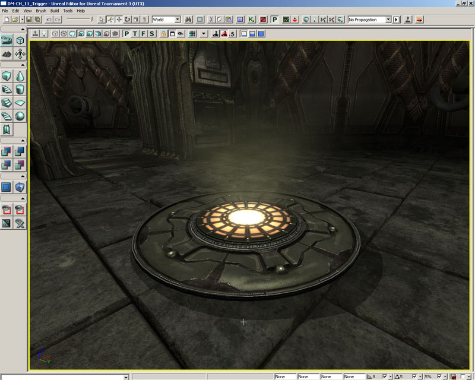
图片 11.2 –子对象创建了状态触发器的可视化的外观。 4. 将会在这个类中重写Touch()事件。最初，actor将不会在任何状态中，并且无论何时当其它actor和这个actor发生碰撞时都会调用这个Touch()事件。声明Touch()事件。
event Touch(Actor Other, PrimitiveComponent OtherComp, vector HitLocation, vector HitNormal)
{
}
当检测到碰撞时，在这个事件中使用Gameinfo类的Broadcast()函数来向屏幕输出信息。
WorldInfo.Game.Broadcast(self,"This is the StateTigger class.");另外，把actor发送到了另一个新的状态，即在下一步中声明的Dialog状态。
GotoState('Dialog');
5. Dialog是在MU_StateTrigger 类中声明的第一个状态。
state Dialog
{
}
6. 然后，在Dialogue状态的内部重载Touch()事件。这样当actor处于Dialog状态并检测到它和另一个actor发生碰撞时，它将执行Touch()事件的这个特定版本。
event Touch(Actor Other, PrimitiveComponent OtherComp, vector HitLocation, vector HitNormal)
{
}
A和在先前声明的Touch()事件一样，这个版本将使用Broadcast()函数来向屏幕输出信息，但这次输出的信息内容和之前是不同的。
WorldInfo.Game.Broadcast(self,"This is the base dialog state's output");7. 把脚本保存到MasteringUnrealScript\Classes目录中，文件名为MU_StateTrigger.uc，然后编译该脚本。修复可能出现的任何语法错误。 8. 打开UnrealEd和DM-CH_11_Trigger.ut3地图。这是一个简单的具有两个房间的地图，在这本书中您已经看过该地图很多次了。

图片 11.3 DM-CH_11_Trigger 地图 9. 打开Actor Browser(Actor浏览器)并选择MU_StateTrigger类。右击视口并选择Add MU_StateTrigger Here(把MU_StateTrigger添加到这里)来放置一个那个新actor的实例。

图片 11.4 –MU_StateTrigger actor被添加到了地图中。 10. 右击其中一个房间的地面，选择Play From Here(从这里播放)来测试地图。跑到触发器actor处，并启动Touch()事件，观察显示到屏幕上的信息。它应该是原始的Touch()事件中的信息。

图片 11.5 –Touch()事件的信息出现。 现在再次运行到触发器actor处。这将将会显示Dialogue状态的Touch()事件的信息。

图片 11.6 –现在显示了Dialog状态的Touch()事件的信息。 这是因为actor现在处于Dialog状态中，所以它的Touch()事件版本优先于这个类中的其它的Touch()事件的版本。 11. 使用新的名称保存地图，以便可以在后续的指南中使用它。 <<<< 指南结束 >>>>
11.4 -状态继承
对于状态来说，继承可以按照您期望的方式工作。当您继承具有一个状态的类时，那么您会在您的类中获得那个类的所有状态、状态函数及标签，所以如果您愿意您可以重载它们或者保持基类的实现。 让我们看一个示例：
class Fish extends Actor;
state Eating
{
function Swim()
{
Log(“Swimming in place while I eat.”);
}
Begin:
Log(“Just a fish in my Eating state.”;
}
class Shark extends Fish;
state Eating
{
function Swim()
{
Log(“Swimming fast to catch up with my food.”);
}
}
class Dolphin extends Fish;
state Eating
{
Begin:
Log(“Just a dolphin in my Eating state.”);
}
在我们上面的示例中，我们定义了Fish 、Shark及Dolphin类。Shark和Dolphin都继承可Fish类，并且它们都分别重载了基类实现的不同部分；Shark类重载了Eat函数，而Dolphin类重载了Begin标签。
扩展状态
在当前类中扩展状态也是可以的，只要这个状态没有重载衍生类的状态即可。当您有一组具有通用功能的状态时，这可能是非常有用的。比如，当actor移动时，您或许要执行一些通用代码，但是后来您想针对actor行走和actor跑动之间对某些功能做特殊处理。
state Moving
{
// Code common to all types of movement.(对于所有运动都通用的代码)
}
state Running extends Moving
{
// Running specific code.(针对跑动的代码)
}
state Walking extends Moving
{
// Walking specific code.(针对走动的代码)
}
指南 11.2 –状态触发器, 第二部分:状态继承
This tutorial sees the addition of the BeginState() and EndState() events to the Dialog state as well as the creation of the Greeting state which extends the base Dialog state in order to show how state inheritance works. 为了展示状态继承是如何工作的，在本指南中我们会看到向Dialog状态中添加了BeginState() 和 EndState()事件以及创建继承于基状态Dialog的Greeting状态。 1. 打开ConTEXT和MU_StateTrigger.uc脚本。 2. Dialog的状态体内的Touch()事件的后面声明的BeginState()事件，它的Name参数是PreviousStateName。
event BeginState(Name PreviousStateName)
{
}
3. 在BeginState()事件中，再次使用Broadcast()函数来向屏幕上显示一条信息。这个信息显示了在把actor放置到当前状态之前它所处于的上一个状态。
WorldInfo.Game.Broadcast(self,"Exiting the"@PreviousStateName@"State");4. 接下来，声明EndState()事件，它的Name参数是NextStateName。
event EndState(Name NextStateName)
{
}
5. 在这个事件中调用一个和Broacast()函数类似的函数。
WorldInfo.Game.Broadcast(self,"Entering the"@NextStateName@"State");6. 在Dialogue状态的下面，声明一个名称为Greeting的新状态，该新状态继承于Dialog状态。
state Greeting extends Dialog
{
}
这个状态，尽管在它的状态体中没有声明任何函数或事件，但它已经包含的Touch(), BeginState(), and EndState()事件，和在Dialogu状态中声明的这些事件一样。
7. 在Greeting状态中重写Touch()事件，以便当actor处于这个状态中并检测到碰撞时可以输出一条全新的信息。
event Touch(Actor Other, PrimitiveComponent OtherComp, vector HitLocation, vector HitNormal)
{
WorldInfo.Game.Broadcast(self,"Hello and welcome to the states example");
}
8. 返回到Dialog状态的Touch()事件中，添加一个GotoState()函数调用，以便当执行那个事件时把actor放到Greeting状态中。
GotoState('Greeting');
9. 保存并编译脚本，修复可能出现的任何错误。
10. 打开UnrealEd及包含在前一章创建的MU_StateTrigger actor的地图。

图片 11.7 –包含MU_StateTrigger actor的地图。 11. 右击其中一个房间的地面，并选择Play From Here(从这里播放)来测试地图。跑到触发器actor处来查看类的主Touch()事件的原始消息。注意同时也显示了Dialog状态的BeginState()事件中的消息。 注意：因为最初actor没有在任何状态中，所以BeginState()事件的PreviousStateName参数引用的状态名称为None。
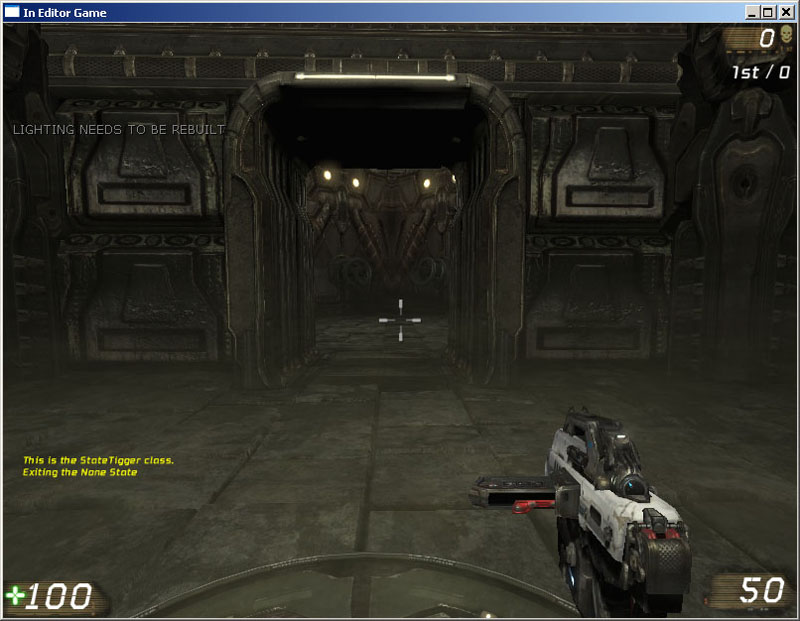
图片 11.8 –现在分别显示了两个消息。 12. 再次跑到触发器actor处，使得它执行Dialog状态中的Touch()事件，从而显示新的消息到屏幕上。您也应该看到Dialog状态的EndState()事件和Greeting状态的BeginState()事件中的消息。

图片 11.9 –这次同时显示了三个消息。 13. 最后，再次跑到触发器actor处。现在将会显示Greeting状态的Touch()事件中的消息到屏幕上

图片 11.10 –显示了Greeting 状态的Touch()事件的消息。 <<<< 指南结束 >>>>
指南11.3 – 状态触发器, 第三部分: AUTO 状态
如果声明状态时使用了Auto关键字，那么当比赛开始时将会把actor初始地放置到那个状态中。在本指南中，MU_StateTrigger的默认状态设置为Dialog状态。同时，会添加两个额外的状态来使您更加理解状态继承的概念。 1. 打开ConTEXT和MU_StateTrigger.uc脚本。 2. 把Auto关键字添加到Dialog状态的声明上，从而当游戏启动时，迫使actor进入到这个状态中。
auto state Dialog
{
…
//code removed for brevity(代码暂时删除)
…
}
*3.* 这次声明一个继承Greeting的名称为Inquisitor的新状态。
state Inquisitor extends Greeting
{
}
4. 接下来，声明另一个继承刚才声明的Inquisitor状态名称为Goodbye的新状态。
state GoodBye extends Inquisitor
{
}
5. 现在，在Greeting状态的Touch()事件中添加GotoState()函数调用，来把actor放置到Inquisitor状态中。
GotoState('Inquisitor');
6. 从Greeting状态中复制Touch()函数并把它粘帖到Inquisitor状态中，按照以下方式改变Broadcast()函数调用中的消息和GotoState()函数调用中的状态名。
event Touch(Actor Other, PrimitiveComponent OtherComp, vector HitLocation, vector HitNormal)
{
WorldInfo.Game.Broadcast(self,"Are you learning a great deal about UnrealScript?");
GotoState('Goodbye');
}
7. 同时，把Touch()事件粘帖到Goodbye状态中，并按照以下方式改变这个状态的函数版本中的消息及状态名称。
event Touch(Actor Other, PrimitiveComponent OtherComp, vector HitLocation, vector HitNormal)
{
WorldInfo.Game.Broadcast(self,"Thanks and have a nice day!");
GotoState('Greeting');
}
8. 保存并编译脚本，修复任何可能存在的错误。
9. 打开UnrealEd和先前指南中使用的包含MU_StateTrigger actor的地图。在其中一个房间的地面上右击，并选择Play From Here(从这里播放)来测试地图。

图片 11.11 –使用Play From Here (从这里播放)功能测试地图 10. 跑动触发器actor处。将会出现一个信息，但是这次的消息应该是来自Dialog状态的Touch()事件而不是来自类的主要Touch()事件，因为在Dialog状态时使用了Auto关键字，所以默认情况下它会被放置到Dialog状态中。当然，也会分别显示Greeting状态和Dialog状态的BeginState() 和 EndState()的信息。
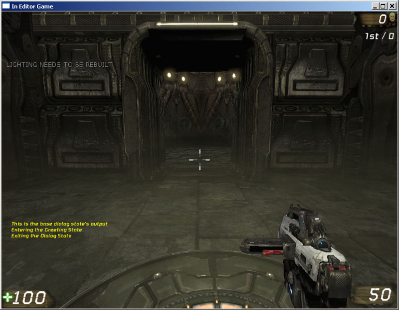
图片 11.12 –最初显示了Dialog 状态的Touch()事件的消息。 11. 继续跑到触发器处来查看其它的信息。现在，actor应该不断地在Greeting, Inquisitor和Goodbye状态间循环，显示了每个状态的消息。 <<<< 指南结束>>>>
11.5 -状态代码
从本质上讲，状态由两部分组成：函数和状态代码。通常会在发生某种转换时执行状态代码，这些转换通常是从一个状态到另一个状态，但是也可以在同一状态的不同情况之间进行转换。这个代码不会放置在任何函数中，而是简单地放在状态本身中，并且它会被放在某种标签的后面。LABELS(标签)
标签用于在状态代码中指明一个特定位置，以便从那里开始执行那段代码。标签可以具有任何有效的名称，通常只能由字符组成，但是当使用状态代码时，有一个特殊的标签，它便是“Begin”标签。这个特殊标签是用于开始执行状态代码的默认标签。看一下以下的示例代码：
auto state MyState
{
function MyFunc()
{
// Does something...
}
Begin:
Log(“MyState’s Begin label is being executed.”);
Sleep(5.0);
goto(‘MyLabel’);
MyLabel:
Log(“MyState’s MyLabel label is being executed.”);
Sleep(5.0);
goto(‘Begin’);
}
LATENT 函数
在上面的示例中，一旦对象进入到MyState，它将从Begin标签处开始执行代码，这将会输出一条日志消息，休眠5秒钟，跳转到MyLabel标签，向日志中输出一条消息，休眠5秒钟，然后开始不断地循环这个过程。只要对象处于MyState状态中，这个过程就会不断地发生。 您或许在想，当状态处于休眠状态时正在发生什么哪？这是一个很好的问题，因为一般那段代码处于阻塞状态，也就是，在完成它的所有执行之前不会运行任何其它代码。在UnrealScript中有一些称为laten函数的函数。简单地说，这些函数允许执行其它代码(也就是，在其它状态和游戏的其它代码)，但是它会阻止当前路径下面的代码的执行。 当使用latent函数工作时，您需要记住几个事情： 1. 当某段时间量过后，那个函数将会返回，然后将会继续执行您的状态代码。 2. Latent函数仅能在状态代码中使用。 3. 您不能从函数体中调latent函数。ACTOR的LATENT函数
Actor类中包含两个非常通用的latent函数，可以在任何Actor类的子类的状态代码中使用它们。Sleep
这个函数会导致状态代码停止执行指定的时间量。一旦那个时间段过后，将会立即继续执行Sleep()函数调用后面的代码。Sleep( float Seconds )Seconds设置状态代码需要暂停执行的秒数。
FinishAnim
这个函数会导致直到当前传入到函数中的AnimNodeSequence上播放的当前动画播放完毕之前，状态代码将暂停执行。FinishAnim( AnimNodeSequence SeqNode )SeqNode参数是和播放动画的actor相关的AnimTree中的动画节点。
CONTROLLER LATENT 函数
Controller(控制器)类包含几个关于寻路和导航的latent函数。MoveTo
这个函数会使由Controller控制的Pawn移动到世界中的指定位置。MoveTo(vector NewDestination, optional Actor ViewFocus, optional bool bShouldWalk = (Pawn != None) ? Pawn.bIsWalking : false)NewDestination是Pawn应该移动到的世界中的位置。 ViewFcous是Pawn应该面向的Actor。将会更新Pawn的旋转值来确保它总是面向ViewFocus。 bShouldWalk参数指出Pawn是应该走向新的位置还是跑向新的位置。
MoveToward
这个函数和MoveTo函数类似，除了这个函数会使得由那个Controller控制的Pawn朝向指定的Actor移动而不是指定的位置移动。MoveToward(Actor NewTarget, optional Actor ViewFocus, optional float DestinationOffset, optional bool bUseStrafing, optional bool bShouldWalk = (Pawn != None) ? Pawn.bIsWalking : false)NewTarget是Pawn应该朝向其移动的Actor。 ViewFcous是指Pawn应该面向的Actor。将会更新Pawn的旋转值来确保它总是面向ViewFocus。 DestinationOffset允许在指定的NewTarget位置附近有一个相对偏移量，从而使得Pawn是朝向Newtarget附近的位置移动，而不是朝向它的精确位置移动。 bUseStrafing参数指出当Pawn正在向新目的地移动过程中它是否可以开枪。 bShouldWalk参数指出Pawn是走向新位置还是跑向新位置。
FinishRotation
这个函数将暂停执行状态代码，直到那个Controller控制的Pawn的旋转值和Pawn的DesiredRotation属性中指定的旋转值匹配为止，。FinishRotation()
WaitForLanding
当Pawn处于PHYS_Falling物理类型中时，这个函数将暂停状态代码的执行，直到那个Controller控制的Pawn已经着陆为止。WaitForLanding(optional float waitDuration)waitDuration参数是Pawn等待着陆的最大秒数。如果Pawn在这段时间过期时还没有着陆，那么将会执行LongFall()事件。
UTBOT LATENT 函数
UTBot类有两个latent函数，这对于创建新的AI行为是非常有用的。WaitToSeeEnemy
直到控制的Pawn直接面向它的敌人并且如果敌人对Pawn来说是可见为止，这个函数将会暂停执行状态代码。WaitToSeeEnemy()
LatentWhatToDoNext
这个函数用于调用WhatToDoNext()函数，它包含AI实体决策功能。通过使用这个函数的latent版本，将会使得在适当的时间量过后也就是在下一次更新时调用这个函数。这可以防止发生紊乱状况，并给出时间来执行AI实体的动作。LatentWhatToDoNext()
11.6 - STATE STACKING(状态栈)
我们已经知道我们可以使用GotoState函数来从一个状态转换到另一个状态。当这种转换发生时，状态将会改变并且不能再返回到先前的状态，大多数情况下，这是我们想要的。比如，当从一个EngagingEnemy状态改变到RunningLikeACoward状态时，我们不想再切换回原来的状态。但是有时候我们确实想停止我们的当前状态，跳转到另一个状态，然后再回到原来状态，对于这种情况可以使用PushState 和PopState函数。PUSHSTATE & POPSTATE
PushState函数几乎和GotoState函数一样。当您调用它时，您向它传入您想转换到的状态、及可选地传入您希望它状态执行开始的标签。因为它把新的状态放到栈的顶部，把其它状态向下押入栈，所以这个函数可以获得它的名称。 PopState函数没有参数，并且它会使您返回到先前执行的状态。 让我们看一个简单的示例：
state Looking
{
function Look()
{
PushState(‘Peeking’);
// Do something else interesting(执行一些其它有意思的事情)...
}
Begin:
PushState(‘Peeking’, ‘Begin’);
// Do yet another interesting thing(执行另一个其它事情)...
}
state Peeking
{
Begin:
Log(“Nothing to see here.”);
PopState();
}
当使用PushState时，有一些您需要知道的有趣的实现细节：
- 当从状态代码中调用PushState时，会把该调用作为latent函数。所以在上面的示例中，当在Begin标签中调用PushState时，在状态弹回之前，将不会它调用后面的代码。
- 当从一个函数中调用PushState时，则不会把该调用作为latent函数对待。所以在上面的示例中，当从Look函数中调用PushState时，那个调用后面的代码将会立即执行，因为仅当在状态代码中时才把PushState作为latent函数对待。
- 您不能在栈上多次押入同一个状态；这样将会失败。
状态栈事件
这些事件和先前讨论的BeginState() 和 EndState()事件类似，只是当使用PushState()和PopState()函数在状态间转换时它们替换了先前那些事件的功能。这些事件和BeginState() 和EndState()事件之间的不同是它们没有参数。PUSHEDSTATE
当通过PushState()函数方式转移到一个新的状态时，将会在押入状态中立即执行这个事件。POPPEDSTATE
当通过PopState()函数的方法返回到先前的状态时，将会立即在弹出的状态中来执行这个事件。PAUSEDSTATE
当通过PuchState()函数的方式转移到一个新的状态时，将会在暂停的状态中执行这个事件。CONTINUEDSTATE
当通过PopState() 函数的方式转移到先前的状态时，将会在继续执行的状态中执行这个事件。11.7 - 状态-相关函数
除了在本章中已经详细介绍的函数外，还有几个和状态相关的其它函数，当创建使用状态的新的actor时它们是非常有用的。ISINSTATE
这个函数可以用于决定actor的当前活动状态或者判定给定的状态是否在栈上。IsInState( name TestState, optional bool bTestStateStack )TestState是要检查的状态的名称。如果actor当前处于这个状态中，那么函数将返回值True。 bTestStateStack参数指出是否要在状态栈中检查给定的状态。如果它为True并且该状态位于栈中，那么函数将会返回值True。 这里是一个示例：
state Looking
{
// Something useful(做一些有用的事情)...
}
state Staring extends Looking
{
// Something useful(做一些有用的事情)...
}
function StartLooking()
{
if (!IsInState(‘Looking’))
{
PushState(‘Looking’);
}
}
在这个示例中，如果actor在Looking状态或者Staring状态中，那么IsInState()函数将会返回真，因为对于继承TestSate的任何状态来说IsInState()函数都会返回真。这个功能对于栈中的继承的状态来说无效。
这是同一个示例，但是它使用了栈查找方法：
state Looking
{
// Something useful(做一些有用的事情)....
}
state Staring extends Looking
{
// Something useful(做一些有用的事情)...
}
function StartLooking()
{
if (!IsInState(‘Looking’, True))
{
PushState(‘Looking’);
}
}
在这个示例中，仅当Looking状态本身出现在状态栈中时才返回真。如果仅有Staring出现在栈中，那么将返回假。
GETSTATENAME
这个函数返回actor的当前的活动状态的名称。这个函数没有参数。这个函数的使用情况和IsInState()函数类似，但是无论以何种方式，这个函数都不能用于继承类中。它仅能返回actor当前所在的真实状态的名称。 这里是一个示例：
state Looking
{
// Something useful(做一些有用的事情)...
}
state Staring extends Looking
{
// Something useful(做一些有用的事情)...
}
function StartLooking()
{
if (GetStateName() == ‘Looking’)
{
PushState(‘Staring);
}
}
仅当actor在Looking状态时才会执行PushState()函数。
ISCHILDSTATE
这个函数用于判定一个状态是否从另一个状态扩展而来。如果是则返回真，如果不是则返回假。IsChildState(Name TestState, Name TestParentState)TestState是要判断的子状态的名称。 TestParentState是要判断的父状态的名称。
DUMPSTATESTACK
作为调试目的，这个函数可以把当前的状态栈输出到日志中。当使用了大量的状态和状态栈创建一个新类时，很可能会出现一些不必要的或意想不到的行为。这个函数可以使得辨别bug变得更加容易。指南 11.4 – 状态触发器, 第四部分:状态栈
在虚幻引擎3和UT3中，使用PushState()和PopState()函数来把状态押入或弹出栈是一个新功能。在本指南中，状态触发器actor使用这些函数来在Greeting和Inquisitor状态之间导航，它显示了这个方法和GotoState()函数调用的不同。 1. 打开ConTEXT和M_StateTrigger.uc脚本。 2. 在Greeting状态中，注释掉GotoState()函数，并使用PushState()函数调用替换掉它，并给向该函数中传入同样的Inquisitor状态。
//GotoState('Inquisitor');
PushState('Inquisitor');
3. 然后在Inquisitor状态中，注释掉GotoState()函数调用，并使用简单的PopState()函数替换它。
//GotoState(‘Goodbye’); PopState();4. 保存并编译脚本，修复任何可能存在的错误。 5. 打开UnrealEd和在先前指南中使用的包含MU_StateTrigger actor的地图。
a. 右击其中一个房间的地面，并选择Play From Here(从这里播放)来测试地图。
b. 跑到触发器actor处来显示Dialog状态的信息，并把actor发送到Greeting状态中。
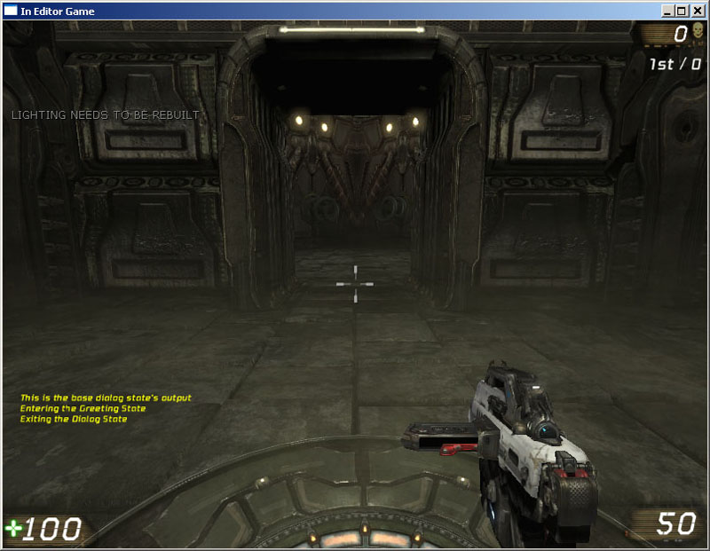
图片 11.13 –显示了Dialog状态的Touch()和EndState()事件的信息和Greeting 状态的BeginState()事件的信息。
c. 再次跑回到那个actor处，但您会注意到仅显示了来自Touch()事件的消息。而分别地忽略掉了Inquisitor和Greeting状态的BeginState()和EndState()事件的消息。但GotoState()函数可以导致执行这些事件。

图片 11.14 –仅显示了Greeting 状态的Touch()事件的消息。
d. 再次跑到actor处，来显示Inquisitor状态的Touch()事件的消息。

图片 11.15 –现在显示了Inquisitor 状态中的Touch()事件的消息。
e. 最后，再次跑到actor处。注意在Inquisitor状态的Touch()事件中的PopState()函数把actor又放回到Greeting状态，从而导致再次显示了greeting消息。
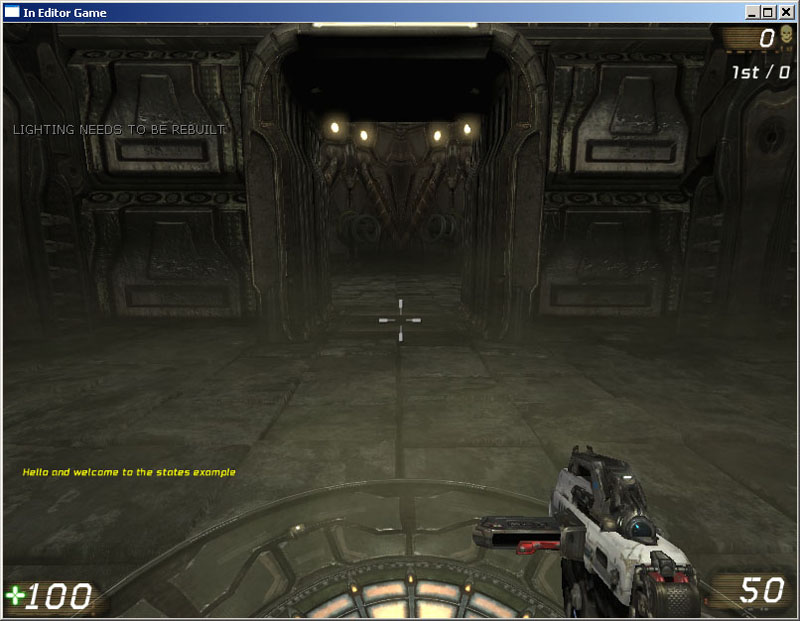
图片 11.16 –再次显示了Greeting 状态的消息。 6. 很明显，因为类正在使用栈，所以BeginState()和EndState()事件不会有效。按照和之前类似的方式，为了使事件指出正在押入或弹出的状态，所以使用了状态栈事件。通过在Dialog状态中声明PushedState()事件开始。
event PushedState()
{
}
在这个函数中，放置一行和在BeginState()中用于输出消息的代码一样的代码，但是使用GetStateName()函数来获得那个状态的适当名称，而不是使用PreeviousStateParameter参数。同时，把单词“Exiting”改为“Pushing”。
WorldInfo.Game.Broadcast(self,"Pushing the"@GetStateName()@"State");复制并粘帖整个事件声明3次，并把新的声明的名称改为PoppedState, PausedState,和ContinuedState。然后把单词“Pushing”分别改为“Popping”, Pausing”, 和“Continuing”。
event PoppedState()
{
WorldInfo.Game.Broadcast(self,"Popping the"@GetStateName()@"State");
}
event PausedState()
{
WorldInfo.Game.Broadcast(self,"Pausing the"@GetStateName()@"State");
}
event ContinuedState()
{
WorldInfo.Game.Broadcast(self,"Continuing the"@GetStateName()@"State");
}
7. 再次保存并编译脚本，修复任何可能存在的错误。
8. 打开UnrealEd和那个先前保存的具有状态触发器的地图。
a. 右击其中一个房间的地面，然后选择Play From Here(从这里播放)来测试地图。
b. 跑到触发器actor处，来显示Dialog状态的信息，并把actor转移到Greeting状态。

图片 11.17 –显示了Dialog 状态的Touch()和EndState()事件的消息及Greeting状态的BeginState()事件的消息。
c. 跑回到actor处，您会发现现在显示了PausedState()和PushedState()事件的消息，因为使用了PushState()函数。

图片 11.18 –除了显示Touch() 消息外，还显示了PausedState()和PushedState()的消息。
d. 再次跑到那个actor处来使得Inquisitor状态弹出。由于使用了PopState()函数调用，现在应该显示了PoppedState() 和ContinuedState()事件的消息。

图片 11.19 –现在显示了Touch()消息的同时还显示了PoppedState() 和ContinuedState()事件的消息。 这个简短的系列指南只是想提供关于状态是什么以及它们如何工作原理基本理解，包括在状态间转移的各种方法。在接下来的指南中，将会在更加复杂的示例中使用状态，使您可以更好地体会到UT3中是如何使用状态来创建在游戏中使用的新项目的。 <<<<指南结束>>>>
指南 11.5 – 炮塔, 第一部分: MU_AUTOTURRET类和结构体声明
随着对状态基本应用的掌握，您现在将着手创建一个新的可放置的可以自动瞄准任何可见敌人的机枪塔。这个类是Pawn类的子类，它可以提供actor的可视化效果，并使用状态来根据它的环境因素来产生不同的行为。在我们深入设计炮塔的状态之前我们需要先执行许多初始设置，所以我们首先要把它们处理好。 1. 打开ConTEXT，使用UnrealScript highlighter(轮廓)创建一个新的文件。 2. 首先，声明一个新的称为MU_AutoTurret的pawn类，它继承了基类Pawn。同时，隐藏AI、Camera、Debug、Pawn和Physics的类别，以便不会在UnrealEd的属性窗口中显示它们，然后设置类为可放置的类。class MU_AutoTurret extends Pawn HideCategories(AI,Camera,Debug,Pawn,Physics) placeable;3. 在我们继续声明变量之前，需要定义几个这个类使用的结构体。首先，创建一个新的RotationRange结构体，它由两个Rotators构成，它们分别代表围绕每个轴的最小和最大旋转量：Pitch(倾斜)、Yaw(偏转)及Roll(旋转)。同时，声明了三个布尔值用于指定是否为每个坐标轴的旋转量使用限制。
//Min and Max Rotators Struct - limiting turret rotation (Min和Max 旋转量结构体-限制炮塔的旋转量)
struct RotationRange
{
var() Rotator RotLimitMin;
var() Rotator RotLimitMax;
var() Bool bLimitPitch;
var() Bool bLimitYaw;
var() Bool bLimitRoll;
structdefaultproperties
{
RotLimitMin=(Pitch=-65536,Yaw=-65536,Roll=-65536)
RotLimitMax=(Pitch=65536,Yaw=65536,Roll=65536)
}
};
意：已经使用structdefaultproperties代码块定义了每个Rotator(旋转量)的默认值。
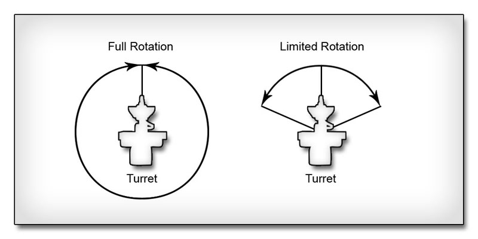
图片11.20 –右侧没有限制旋转量，左侧限制了旋转量。 4. 接下来定义一个名称为TurretSoundGroup的结构体，它包含了几个到SoundCues的引用。这些SoundCue引用用于决定在特定情况下播放的声效。
// Sounds for turret behaviors
struct TurretSoundGroup
{
var() SoundCue FireSound;
var() SoundCue DamageSound;
var() SoundCue SpinUpSound;
var() SoundCue WakeSound;
var() SoundCue SleepSound;
var() SoundCue DeathSound;
};
5. 炮塔需要几个特殊的特效，比如枪口火焰、伤害特效和销毁特效，这些特效需要到ParticleSystems(粒子系统)的引用。一个名称为TurretEmitterGroup的结构体包含了这些引用。一些其它的属性也包含在这个结构体中：决定显示枪口火焰特效的时间量的浮点型变量；损害特效中的控制粒子产生速率的粒子系统的参数的Name(名称)；当炮塔销毁后用于指定是否继续产生伤害特效的Bool(布尔值)。
//PSystems for the turret
struct TurretEmitterGroup
{
var() ParticleSystem DamageEmitter;
var() ParticleSystem MuzzleFlashEmitter;
var() ParticleSystem DestroyEmitter;
var() Float MuzzleFlashDuration;
var() Name DamageEmitterParamName;
var() Bool bStopDamageEmitterOnDeath;
structdefaultproperties
{
MuzzleFlashDuration=0.33
}
};
注意，MuzzleFlashDuration属性的默认值设置为0.33。对于大多数枪口火焰来说，这应该是个很好的初始值。
6. 另个名称为TurretBoneGroup的结构体提供了到三个插槽名称和骨架控制器名称的引用。插槽名称引用作为任何粒子特效和炮塔发射产生射弹的定位器的插槽。骨架控制器的名称用于操作分配给炮塔用于控制炮塔旋转量的AnimTree(动画树)中的SkelControlSingleBone。
//Bone, Socket, Controller names (骨骼、插槽、控制器的名称)
struct TurretBoneGroup
{
var() Name DestroySocket;
var() Name DamageSocket;
var() Name FireSocket;
var() Name PivotControllerName;
};
7. 最后的一个结构体是TurretRotationGroup，它包含了三个Rotators(旋转量)，用于指定炮塔在空闲、激活或销毁时所处的姿势。根据不同的情况，会对炮塔的旋转量在它的当前旋转量和这三个旋转量其中一个之间进行插值。这个结构体也包含了一个Bool值，用于指定当炮塔销毁时是否使用预定义的姿势，否则将使用随机计算的姿势。
//Rotators defining turret poses
struct TurretRotationGroup
{
var() Rotator IdleRotation;
var() Rotator AlertRotation;
var() Rotator DeathRotation;
var() Bool bRandomDeath;
};

图片 11.21 –旋转量用于创建炮塔网格物体的姿势。 8. 使用和类名相匹配的文件名MU_AutoTurret.uc，把脚本保存在asteringUnrealScript/Classes目录中。 <<<< 指南结束>>>>
指南 11.6 – 炮塔, 第二部分:类的变量声明
声明完MU_AutoTurret类需要的结构体后，便可以声明类的变量了。这些变量分为两组。第一组是由仅被类中的代码使用而设计人员不能在UnrealEd中访问的变量组成。第二组是设计人员可以在UnrealEd中使用它们来自定义炮塔的外观和行为的属性。本指南覆盖了第一组中的不可编辑的变量的声明。 1. 打开ConTEXT和MU_AutoTurret.uc s脚本。 2. 为了跟踪和射击目标，炮塔需要知道它要射击的是什么。这个目标是一个Pawn和到炮塔的目标的两个独立引用。一个引用是在上一次更新过程中炮塔正在跟踪的当前目标，另一个是在当前更新中炮塔应该跟踪的新目标。这两个引用是必须的，以便我们可以在目标从一个更新变换到另一更新时我们可以辨别出它来。var Pawn EnemyTarget; //The new enemy the turret should target this tick(这次更新中炮塔应该对准的敌人) var Pawn LastEnemyTarget; //The enemy the turret was targeting last tick(上次更新中炮塔对准的敌人)3. 为了知道玩家什么时候移动，炮塔也必须跟踪从炮塔到目标的方向。对于目标来说，将使用两个引用来存放在这次tick(更新)过程中和前一次tick(更新)中的方向向量
var Vector EnemyDir; //Vector from the turret's base to the enemy's location this tick (这次更新中，从炮塔的基座到敌人的位置的方向。) var Vector LastEnemyDir; //Vector from the turret's base to the enemy's location last tick(上次更新中，从炮塔的基座到敌人的位置的方向。)

图片 11.22 –随着目标的移动，更新EnemyDir和 LastEnemyDir。 4. 为了从炮台的当前位置对炮台的旋转值进行插值使它面向目标，需要一些信息。这些信息如下所示：
- 炮塔的支点骨骼的起始旋转量。
- 炮塔的支点骨骼的期望旋转量。
- 执行旋转需要的总时间量(根据稍后声明的旋转速率决定)。
- 自从插值开始后过去的时间量
- 插值的alpha值(0.0到1.0)。
var float TotalInterpTime; //Total time to interpolate rotation 插值旋转值的总时间 var Float ElapsedTime; //Time spent in the current interpolation 在当前插值中花费的时间。 var Float RotationAlpha; //Curret alpha for interpolating to a new rotation 当对一个新的旋转值进行插值时的当前alpha值 var Rotator StartRotation; //Beginning rotation for interpolating 插值的起始旋转值 var Rotator TargetRotation; //Desired rotations for interpolating 插值的期望旋转值5. 为了使炮塔可以在正确的位置和旋转值处产生射弹，使用两个变量来存储位于炮塔的炮管尖端的插槽在世界空间中的位置和旋转值。
var Vector FireLocation; //World position of the firing socket 开火插槽的世界空间位置。 var Rotator FireRotation; //World orientation of the firing socket 开火插槽在世界空间旋转值。
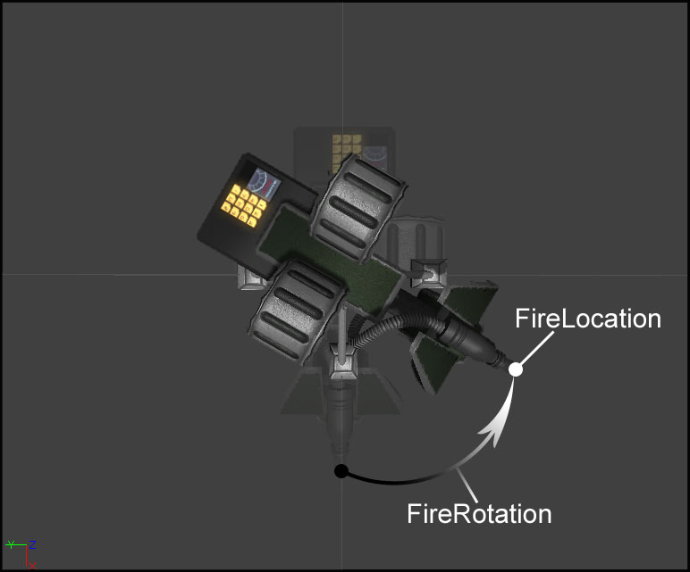
图片 11.23 –FireLocation和FireRotation的示例。 6. 炮塔的旋转值是基于一个支点骨骼的，但是不能直接控制这个骨骼的旋转值。而是，一个SkelControlSingleBone连接到分配给炮塔的AnimTree(动画树)中的支点骨骼上，然后通过操作骨架控制器来控制炮塔的旋转值。当然，这意味着需要一个到这个骨骼控制器的引用。
var SkelControlSingleBone PivotController; //The skelcontrol in the AnimTree(动画树中的skelcontrol)7. 定义两个布尔值来存储炮塔的当前状态。第一个bCanFire，它判定炮塔是否处于它可以向目标发射射弹的状态中。另一个是bDestroyed，它判定炮塔是否已经被销毁并不应该再向敌人射击。
var Bool bCanFire; //Is the turret in a firing state?(当前炮塔在开火状态中吗？) var Bool bDestroyed; //Has the turret been destroyed?(炮塔已经被销毁了吗？)8. 正如您将在下一个指南中看到的，设计人员可以在UnrealEd中配置炮塔的生命值。为了获得一个到炮塔可以具有的最大生命值的引用，我们定义了一个单独的变量来存放那个属性的初始值。
var Int MaxTurretHealth; //Max health for this turret(炮塔的最大生命值)9. 名称为FullRevTime的浮点型变量，当炮塔在以下一个指南中出现的属性MinTurretRotRate中指定的最小旋转速率旋转时，该变量存储了炮塔进行完全旋转所需要的秒数。
var Float FullRevTime; //Seconds to make full rev at min rot rate 以最小旋转速率进行完全旋转所需的秒数10. 名称为GElapsedTime的浮点值，它用于存储自从上次在类的全局函数Tick()中执行敌人定位后所过去的时间秒数。G前缀简单地预示这个变量用于全局的Tick()函数中而不是用于任何状态的Tick()函数中。
var Float GElapsedTime; //Elapsed time since last global tick(自从上次全局更新后所过去的时间)11. 名称为OrigMinRotRate的Int型变量，它用于存放当比赛开始时其中一个可编辑变量MinTurretRotRate的初始值，MinTurretRotRate将会在下一指南中进行声明。
var Int OrigMinRotRate; //Beginning value of MinTurretRotRate(MinTurretRotRate的初始值)12. 这个组中的后几个变量是到用于显示损害、抢嘴火焰及销毁特效的ParticleSystemComponents(粒子系统组件)的引用。
var ParticleSystemComponent DamageEffect; //PSys component for damage effects(损害特效的PSys组件) var ParticleSystemComponent MuzzleFlashEffect; //PSys component for muzzle flashes(抢嘴火焰的PSys组件) var ParticleSystemComponent DestroyEffect; //PSys component for destruction effects(销毁特效的PSys组件)

图片 11.24 –抢嘴火焰、损害及销毁的特效的示例。 13. 保存文档来保存您的成果。 <<<< 指南结束 >>>>
指南 11.7 – 炮塔, 第三部分:可编辑变量的声明
第二组变量属于MU_AutoTuret类，它由设计人员可以在虚幻编辑器中进行配置的属性组成。这部分包含使用了先前声明的结构体的变量，并且它使炮塔类变得更加灵活，因为它允许设计人员在不需要修改任何代码的情况下自定义炮塔的外观和行为。在本指南中声明的所有变量都会被声明为可编辑变量，并且把它们放在Turret(炮塔)种类中。 1. 打开ConTEXT和MU_AutoTurret.uc脚本。 2. 您或许已经注意到在前面的指南中我们使用了到插槽和骨架控制器的引用，这或许已经引导您得出结论：炮塔使用骨架网格物体作为它的显示组件。Pawn确实已经有了一个SkeletalMeshComponent引用，但是炮塔类声明了它自己的骨架网格物体，并且它将会显示在Turret(炮塔)种类中。除了用于显示目的的SkeletalMeshComponent外，还使用了DynamicLightEnvironmentComponent来更加高效地照亮网格物体。同时还指定了第二个网格物体，当炮塔销毁时将会使用该网格物体和默认的网格物体进行交换。var(Turret) SkeletalMeshComponent TurretMesh; //SkelMeshComp for the turret(炮塔的骨架网格物体组件) var(Turret) DynamicLightEnvironmentComponent LightEnvironment; //For efficient lighting(用于更加高效的光照) var(Turret) SkeletalMesh DestroyedMesh; //destroyed SkelMesh(销毁后的骨架网格物体)3. 需要一个先前定义的TurretBoneGroup结构体的一个实例，它提供了控制炮塔的旋转值及附加特效的插槽名称及骨架控制器。
var(Turret) TurretBoneGroup TurretBones; // Socket, Controller names(插槽、控制器名称)4. 除了需要一个TurretRotationGroup结构体的实例来设置炮塔的姿势外，还需要使用一个RotationRange实例来为每个轴的旋转值设置限制，同时还需要两个Int变量来设置炮塔可以达到的最小和最大旋转速率。
var(Turret) TurretRotationGroup TurretRotations; //Rotations defining turret poses( 定义炮塔姿势的旋转值) var(Turret) RotationRange RotLimit; //Rotation limits for turret(炮塔的旋转值的限制) var(Turret) Int MinTurretRotRate; //Min Rotation speed Rot/Second(每秒钟炮塔的最小旋转速度) var(Turret) Int MaxTurretRotRate; //Max Rotation speed Rot/Second(每秒钟炮塔的最大旋转速度)5. 炮塔发射射弹，并且需要知道要发射哪类射弹。同时，以什么速度发射射弹通过每秒钟发射的轮数来指定。为了给出真实炮塔的更加真实的展现，将会在炮塔瞄准中引入一些变化。
var(Turret) class<Projectile> ProjClass; //Type of projectile the turret fires(炮塔发射的射弹的类型) var(Turret) Int RoundsPerSec; //Number of rounds to fire per second(每秒钟发射的轮数) var(Turret) Int AimRotError; //Maximum units of error in turret aiming(炮塔瞄准中的最大单位误差)

图片 11.25 –具有不同的RoundsPerSecond 值的多个炮塔。 6. 一个TurretEmitterGroup结构体的实例，它提供了到损害、销毁及抢嘴火焰特效的粒子系统的引用。
var(Turret) TurretEmitterGroup TurretEmitters; //PSystems used by the turret(炮塔使用的粒子系统)7. TurretSoundGroup结构体实例中存放了炮塔引用的声效。
var(Turret) TurretSoundGroup TurretSounds; //Sounds used for turret behaviors(用于炮塔行为的声效)8. 当Pawn有Health属性时，炮塔使用它自己的TurretHealth属性来保存Turret(炮塔)组中包含的所有属性。
var(Turret) Int TurretHealth; //Initial amount of health for the turret(炮塔生命值的初始量)9. 保存脚本来保存您的成果。 <<<< 指南结束>>>>
指南 11.8 – 炮塔, 第四部分:默认属性
设置MU_AutoTurret类的最后一部分，需要创建炮塔所使用的组件的子对象。同时，在默认属性代码块中，必须为结构体实例的属性及在前面指南中声明的各种独立的属性设置默认值。 1. 打开ConTEXT及MU_AutoTurret.uc脚本。 2. 创建defaultproperties(默认属性)代码块
defaultproperties
{
}
3. 创建DynamicLightEnvirnmentComponent是非常简单的，因为它不需要设置任何属性。所有的默认属性都能满足需求。然后把它分配给LightEnvironment变量，并把它添加到Components(组件)数组中。
Begin Object Class=DynamicLightEnvironmentComponent Name=MyLightEnvironment End Object LightEnvironment=MyLightEnvironment Components.Add(MyLightEnvironment)4. 需要创建SkeletalMeshComponent(骨架网格物体组件)，然后把它添加到Components(组件)数组中并把它分配给类的TurretMesh变量和从Pawn类继承的Mesh变量。另外，需要设置这个组件的SkeletalMesh(骨架网格物体)、AnimTreeTemplate(动画树模板)、PhysicsAsset(物理资源)及LightEnvirnment(光照环境)属性。
Begin Object class=SkeletalMeshComponent name=SkelMeshComp0 SkeletalMesh=SkeletalMesh'TurretContent.TurretMesh' AnimTreeTemplate=AnimTree'TurretContent.TurretAnimTree' PhysicsAsset=PhysicsAsset'TurretContent.TurretMesh_Physics' LightEnvironment=MyLightEnvironment End Object Components.Add(SkelMeshComp0) TurretMesh=SkelMeshComp0 Mesh=SkelMeshComp0分配给Skeletalmesh、AnimTreeTemplate及PhysicsAsset的资源放在DVD上为本章提供文件的TurretContent包中。这些只是默认属性值，当您把炮塔actor放置到虚幻编辑器中来自定义您的炮塔时，您可以把它们替换成您自己的资源。

图片 11.26 –TurretContent 包中的TurretMesh 骨架网格物体。 5. MuzzleFlashEffect(枪嘴火焰特效)、DestroyEffect(毁坏特效) 及DamageEffect(伤害特效)的ParticleSystemComponent(粒子系统组件)子对象是非常类似的，并且可以一次性完成对它们的设置。唯一的不同是DamageEffect(损害特效)组件中SecondsBeforeInactive(变为非活动前需要的时间)属性需要设置为非常高的值10000.0，而不是向其它两个组件那样设置为1.0，从而确保ParticleSystem(粒子系统)可以一置地持续播放。
Begin Object Class=ParticleSystemComponent Name=ParticleSystemComponent0 SecondsBeforeInactive=1 End Object MuzzleFlashEffect=ParticleSystemComponent0 Components.Add(ParticleSystemComponent0) Begin Object Class=ParticleSystemComponent Name=ParticleSystemComponent1 SecondsBeforeInactive=1 End Object DestroyedEffect=ParticleSystemComponent1 Components.Add(ParticleSystemComponent1) Begin Object Class=ParticleSystemComponent Name=ParticleSystemComponent2 SecondsBeforeInactive=10000.0 End Object DamageEffect=ParticleSystemComponent2 Components.Add(ParticleSystemComponent2)6. 位于TurretBones结构体中的属性值是基于默认的SkeletalMesh(骨架网格物体)和 Animtree(动画树)进行设置的。当使用不同的网格物体或动画树时，可以在编辑器中对其进行覆盖。
TurretBones={(
DestroySocket=DamageLocation,
DamageSocket=DamageLocation,
FireSocket=FireLocation,
PivotControllerName=PivotController
)}
7. 对于TurretSounds结构体，我们把UT3中的默认声效分配给这个结构体中的每个属性。
TurretSounds={(
FireSound=SoundCue'A_Weapon_Link.Cue.A_Weapon_Link_FireCue',
DamageSound=SoundCue'A_Weapon_Stinger.Weapons.A_Weapon_Stinger_FireImpactCue',
SpinUpSound=SoundCue'A_Vehicle_Turret.Cue.AxonTurret_PowerUpCue',
WakeSound=SoundCue'A_Vehicle_Turret.Cue.A_Turret_TrackStart01Cue',
SleepSound=SoundCue'A_Vehicle_Turret.Cue.A_Turret_TrackStop01Cue',
DeathSound=SoundCue'A_Vehicle_Turret.Cue.AxonTurret_PowerDownCue'
)}
8. 为TurretEmitter结构体的属性分配了一个自定义的和两个已存的ParticleSystems(粒子系统)，同时提供了控制损害发射器的粒子产生速率的参数。
TurretEmitters={(
DamageEmitter=ParticleSystem'TurretContent.P_TurretDamage',
MuzzleFlashEmitter=ParticleSystem'WP_Stinger.Particles.P_Stinger_3P_MF_Alt_Fire',
DestroyEmitter=ParticleSystem'FX_VehicleExplosions.Effects.P_FX_VehicleDeathExplosion',
DamageEmitterParamName=DamageParticles
)}

图片 11.27 –损害、枪嘴火焰及销毁特效的粒子系统。 9. TurretRotations结构体中的每个旋转值都设置为默认网格物体姿势的默认值。
TurretRotations={(
IdleRotation=(Pitch=-8192,Yaw=0,Roll=0),
AlertRotation=(Pitch=0,Yaw=0,Roll=0),
DeathRotation=(Pitch=8192,Yaw=4551,Roll=10922)
)}

图片 11.28 –呈现出Idle(空闲)、Alert(激活)及Death(死亡)姿势的TurretMesh。 10. 最后，将所有其它的属性都设置为默认值，比如旋转率、开火速率、生命值、射弹类、瞄准误差等。另外，在这里还设置了一个继承属性：bEdShouldSnap。当设置这个值为True时，那么当把这个炮塔的实例放置到虚幻编辑器中时，它将会对齐到网格上。
TurretRotRate=128000 TurretHealth=500 AimRotError=128 ProjClass=class'UTGame.UTProj_LinkPowerPlasma' RoundsPerSec=3 bEdShouldSnap=true11. 保存脚本来保存您的成果。 <<<< 指南结束 >>>>
指南 11.9 – 炮塔, 第五部分: POSTBEGINPLAY() 事件
返回到MU_AutoTurret类，重载PostBeginPlay()事件，并使用它来创建控制器及初始化炮塔。 1. 打开ConTEXT和MU_AutoTurret.uc脚本。 2. 声明PostBeingPlay()事件，以便可以在炮塔类中重载它。
event PostBeginPlay()
{
}
3. 调用AIController类的PostBeginPlay()，从而确保执行父类中存在的任何基本的初始化。
Super.PostBeginPlay();4. MaxTurretHealth设置为TurretHealth属性的初始值。稍后，这将用于决定给定时间中对炮塔造成的损害的百分比。OrigMinRotRate的值初始化为MinTurretRotRate的值，并且通过使用rotator(旋转器)的完整旋转的长度除以MinTurretRotaRate来计算FullRevTime。
MaxTurretHealth = TurretHealth; OrigMinRotRate = MinTurretRotRate; FullRevTime = 65536.0 / Float(MinTurretRotRate);5. 要想初始化PivotController变量，我们需要在分配给SkeletalMeshComponent (骨架网格物体组件)的AnimTree(动画树)找到一个到SkelControlSingleBone的骨架控制器的引用。通过把TurretBones.PivotControllerName的值传入到组件的FindSkelControl()函数，并结果分配给SkelControlSingleBone，便可以完成这个目的。
PivotController=SkelControlSingleBone(Mesh.FindSkelControl(TurretBones.PivotControllerName));注意：代码使用Mesh变量来引用SkeletalMeshComponenet，即使我们已经在这个类中声明了TurretMesh变量。如果您记得这两个变量的默认属性值都是SkeletalMeshComponent，那么它们将引用同一个组件。在代码中之所以使用Mesh是因为它的名称比较短比较容易书写。 6. 接下来，通过把FireLocation和FireRotation变量以及TurretBones.FireSocket值传入到SkeletalMeshComponent的GetSocketWorldLocationAndRotation()函数中来初始化FireLocation和FireRotation变量。
Mesh.GetSocketWorldLocationAndRotation(TurretBones.FireSocket,FireLocation,FireRotation);这个函数中的第二个和第三个参数是使用Out修饰符声明的，正如您知道的，这意味着这个函数设置了传入到这个函数中的这些变量的值。 + 7. TurretEmitters结构体中指定的ParticleSystems(粒子系统)被分配作为损害、销毁和喷嘴火焰特效这三个ParticleSystemComponents(粒子系统组件)的模板。
DamageEffect.SetTemplate(TurretEmitters.DamageEmitter); MuzzleFlashEffect.SetTemplate(TurretEmitters.MuzzleFlashEmitter); DestroyEffect.SetTemplate(TurretEmitters.DestroyEmitter);8. 通过使用SkeletalMeshComponent 的AttachComponentToSocket()函数把这三个ParticleSystemComponents附加到SkeletalMeshComponent的适当的插槽上。
Mesh.AttachComponentToSocket(DamageEffect, TurretBones.DamageSocket); Mesh.AttachComponentToSocket(MuzzleFlashEffect, TurretBones.FireSocket); Mesh.AttachComponentToSocket(DestroyEffect, TurretBones.DestroySocket);

图片 11.29 –附加到骨架网格物体插槽位置处的粒子系统。 9. 最后，设置炮塔的物理为PHYS_None，所以不为炮塔应用任何物理。
SetPhysics(PHYS_None);10. 保存脚本来保存您的成果。 <<<< 指南结束 >>>>
指南 11.10 – 炮塔, 第六部分: ROTATION(旋转)函数
在炮塔脚本中从各个角度来说，为了使得它呈现出Idle, Alert, 及Death旋转值中设置的姿势，炮塔都需要能够旋转到给定的旋转值。为了使这个旋转看上去更加平滑及真实，则需要使用插值，而不是直接地设置旋转值，那样会导致突兀的效果。在这个过程中涉及到两个函数，一个函数设置所有的必要属性并设置循环计数器，而另一个函数计算插值旋转值并相应地调整骨架控制器。 1. 打开ConTEXT和MU_AutoTurret.uc脚本。 2. 添加的第一个函数是DoRotation()，并且它有一个Rotator参数，名称为NewRotation。
function DoRotation(Rotator NewRotation, Float InterpTime)
{
}
3. 第二个函数，是一个计时器函数，它的名称是RotateTimer()，没有参数。
function RotateTimer()
{
}
4. 第一个DoRotation()函数初始化了炮塔类的StartRotation、TargetRotation及 RotationAlpha属性。
StartRotation = PivotController.BoneRotation; TargetRotation = NewRotation; RotationAlpha = 0.0; TotalInterpTime = InterpTime;正如您看到的，StartRotation被设置为动画树中骨架控制器的BoneRotation属性指定的炮塔的当前旋转值。TargetRotation被设置为传入到函数中的NewwRotation。然后，把RotationAlpha重置为0.0，来开始进行新的插值，并且把传入到函数中的时间量设置为TotalInterpTime。 5. 一旦初始化了这些值，将会设置循环计时器每个0.033秒调用一个RotateTimer()函数(或每秒钟调用30次该函数)。
SetTimer(0.033,true,'RotateTimer');6. 在RotateTimer()函数中，使用和计时器的速率0.033一样的值来作为RotationAlpha的增量。
RotationAlpha += 0.033;7. 如果RotationAlpha小于或等于TotalInterpTime，那么则计算插值并使用新的旋转值来设置BoneRotation属性。
if(RotationAlpha <= TotalInterpTime) PivotController.BoneRotation = RLerp(StartRotation,TargetRotation,RotationAlpha,true);定义在Object类中的RLerp()函数执行基于传入函数中的开始旋转值、结束旋转值及当前alpha值来执行差值计算。最后的参数，一个布尔值，指定了是否使用最短的距离来从开始旋转值处到结束旋转值处进行插值。

图片 11.30 –更新骨架控制器的BoneRotation 来旋转炮塔。 8. 另外，如果RotationAlpha的值大于1.0，则表示插值已经结束，清除计时器。
else
ClearTimer('RotateTimer');
9. 保存脚本来保存您的成果。
<<<< 指南结束 >>>>
指南 11.11 – 炮塔, 第七部分:状态声明
炮塔类由四个状态组成，它们分别定义了炮塔可以呈现的不同行为。这里，我们把状态声明为骨架状态或占位符，只是想让您知道这里是存在东西的。我们将会在接下来的指南中来填充这些状态体。 1. 打开ConTEXT 和MU_AutoTurret.uc脚本。 2. 声明的第一个状态是Idle(空闲)状态。这是炮塔的默认初始状态。它的函数是非常的容易理解的：它使得炮塔处于空闲或站立状态，等待某些外部事件发生，它们会强制炮塔进入到某些其它状态并采取适当的动作。
auto state Idle
{
}
注意，当游戏开始时，状态声明中使用的Auto修饰符会强制炮塔进入这个状态。
3. 这个炮塔类中声明的下一个状态是Alert(激活)状态。这个状态代表它的警觉度相对于idle(空闲)状态来说提高了，在这个状态中，炮塔会积极地搜索任何对于它可见的可以攻击的敌人。
state Alert
{
}
4. 在这个类中声明的下一个状态时Defend(防卫)状态。一旦已经发现了敌人，那么炮塔将进入Defend状态。这个状态处理瞄准敌人及投射射弹。
state Defend
{
}
5. 在炮塔类中声明的最后一个状态是Dead状态。这也是炮塔类的最后一个状态，仅当炮塔的生命值为0时才进入这个状态。这个状态处理所有的销毁特效，并产生所有的其它功能，比如搜索敌人、瞄准敌人、向敌人开火。
state Dead
{
}
6. 保存脚本来保存您的成果。
<<<< 指南结束 >>>>
指南 11.12 – 炮塔, 第八部分:全局函数TAKEDAMAGE()
T 我们创建的炮塔可以游戏中的玩家被损害甚至销毁。为了处理这个产生损害的功能，则需要重写从父类继承的TakeDamage()函数。本指南将会讲述这个TakeDamage()函数的设立步骤。 1. 打开ConTEXT和MU_AutoTurret.uc脚本。 2. 在炮塔类中继承TakeDamage()事件并重载它，从而使得炮塔可以处理播放它的损害特效和声音以及使用它的TurretHealth变量代替继承的Health变量。声明这个事件以便对其进行重载。
event TakeDamage(int Damage,
Controller InstigatedBy,
vector HitLocation,
vector Momentum,
class<DamageType> DamageType,
optional TraceHitInfo HitInfo,
optional Actor DamageCauser )
{
}
3. 首先，可以通过使TurretHealth值减去作为Damgage参数传入的值来调整TurretHealth属性。
TurretHealth -= Damage;4. 接下来，执行一个检测来判定DamageEmitter是否存在，然后使用ParticleSystemComponent的SetFloatParam()函数来相应地设置DamageEffect的产生速率参数的值。
if(TurretEmitters.DamageEmitter != None)
{
DamageEffect.SetFloatParameter(TurretEmitters.DamageEmitterParamName,FClamp(1-Float(TurretHealth)/Float(MaxTurretHealth)),0.0,1.0));
}
上面的大部分代码都是非常容易理解的。传入到SetFloatParameter()函数中的参数名称作为第一个参数，而分配给那个参数的值作为第二个参数。粒子系统中的参数的期望值是0.0到1.0之间的值，它们用于表示到炮塔造成损害的相对量。这个值会被映射到一个新的范围，用于决定每秒中要产生的粒子的数量。
FClamp(1-Float(TurretHealth)/Float(MaxTurretHealth)),0.0,1.0)这个值是通过把当前的生命值除以初始的最大生命值来获得炮塔生命值的剩余百分比来进行计算的。然后用1减去那个值来获得相反的那部分的半分比，即已经造成的伤害的百分比。为了便于比较，我们把这个值区间限定到0.0到1.0之间。

图片 11.31 –因为炮塔被损害，所以损害发射器产生了更多的粒子。 5. 当炮塔受到损害时，则会在调整损害特效后，使用PlaySound()函数来播放任何应该播放的声音。
if(TurretSounds.DamageSound != None) PlaySound(TurretSounds.DamageSound);6. 作为防卫机制，任何射击或损害炮塔的Pawn都会变为炮塔的敌人并会被作为射击目标。InstigatedBy参数是一个控制器，所以如果存在一个Pawn，那么它将变为炮塔的新的EnemyTarget(敌人目标)。
if(InstigatedBy.Pawn != None) EnemyTarget = InstigatedBy.Pawn;
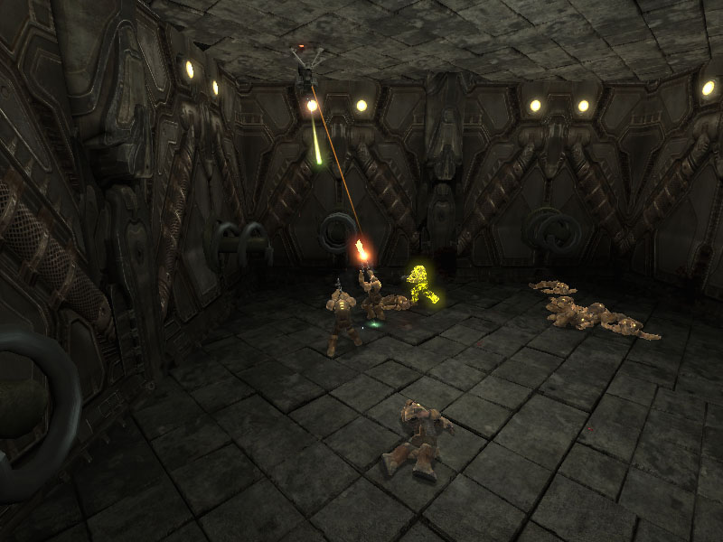
图片 11.32 –损害炮塔的Pawn变为新的EnemyTarget (敌人目标)。 7. 最后，如果它的生命值已经耗尽，则把炮塔设置为Dead状态。
if(TurretHealth <= 0)
{
GotoState('Dead');
}
8. 保存脚本来保存您的成果。我们在以后的指南中将会再次返回到这个函数进行介绍。
指南 11.13 – 炮塔, 第九部分: 全局函数 TICK()
炮塔的全局函数Tick()负责查找对于它来说可见的敌人，并对其瞄准和射击。这个函数存在于任何状态之外，当炮塔处于Alert或Defend状态时将会使用这个函数。 1. 打开ConTEXT和MU_AutoTurret.uc脚本。 2. 在先前章节中声明状态的后面声明Tick()函数，从而确保它不在任何这些状态的内部。
function Tick(Float Delta)
{
}
3. Tick()函数的主要功能是通过查找距离炮塔的当前目标最近的玩家来选择一个新的敌人。这将需要计算炮塔正在瞄准的方向和正在讨论的玩家的方向的点积，并把结果和每个后续玩家进行比较。所以使用两个浮点型变量来存储当前的点积和当前的最近点积。
local Float currDot; local Float thisDot;迭代器用于在比赛中的所有玩家之间循环。这要求迭代器中有一个UTPawn局部变量来存储到每个玩家的引用。
local UTPawn P;最后，需要一个布尔局部变量来指定是否已经找到新的敌人，把它设置为射击目标，并启用代码来选择把它放到哪个状态中。
local Bool bHasTarget;每个点积操作的结果都在-1到1之间。-1代表玩家在和炮塔正在瞄准的方向完全相反，1代表玩家直接就在炮塔的瞄准方向上。我们把currDot初始化为-1.01，以便找到的任何玩家的点积结果都大于初始值。
currDot = -1.01;4. 使用If/Else语句使得炮塔仅每隔0.5秒并且仅在炮塔没有被摧毁的情况下执行瞄准。
if(GElapsedTime > 0.5 && !bDestroyed)
{
}
else
{
}
在If语句块的内部，重置了GElapsedTime 和bHasTarget的值。
GElapsedTime = 0.0; bHasTarget = false;在Else语句块中，GElapsedTime增加了自从上次调用Tick()函数后过去的时间量。
GElapsedTime += Delta;现在，If/Else语句如下所示：
if(GElapsedTime > 0.5 && !bDestroyed)
{
GElapsedTime = 0.0;
bHasTarget = false;
}
else
{
GElapsedTime += Delta;
}
5. 在返回到If语句块中，AllPawns迭代器用于在的当前比赛中的所有的UTPawns上进行循环。
foreach WorldInfo.AllPawns(class'UTGame.UTPawn',P)
{
}
6. 作为迭代器中的if语句的条件，可以使用所有Actor都具有的FastTrace()函数来执行一次简单的跟踪来判定当前的pawn是否在炮塔的视线范围之内。如果这个函数返回True，那么当从开始位置到结束位置进行扫描时没有碰到任何世界几何体。
if(FastTrace(P.Location,FireLocation))
{
}
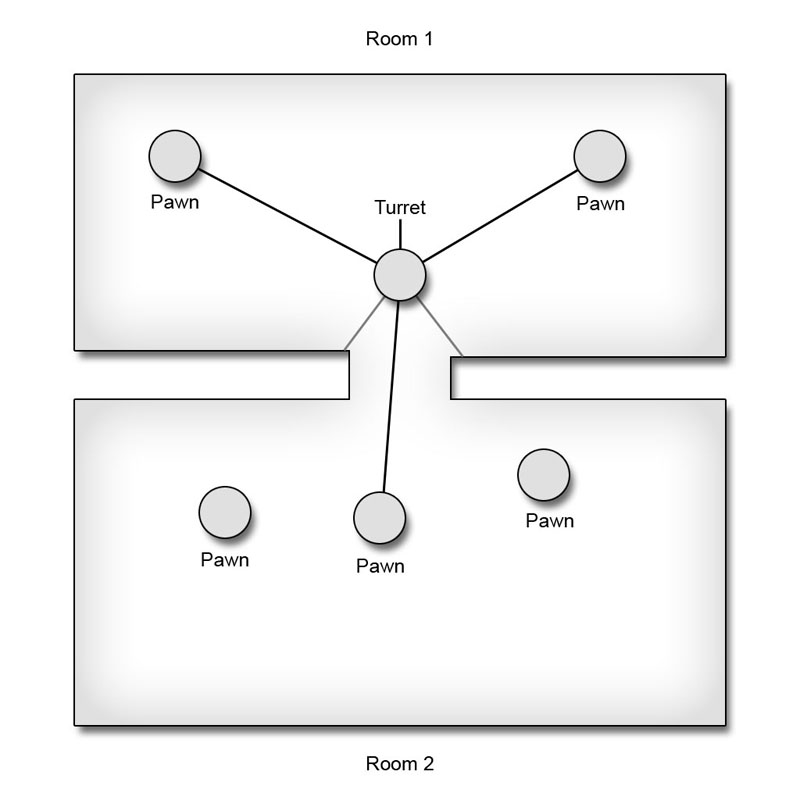
图片 11.33 –仅可见的Pawns通过了FastTrace() 检测。 7. 如果跟踪成功，那么将会计算炮塔当前正在瞄准的方向和从炮塔的枪嘴到当前Pawn的方向之间的点积。
thisDot = Normal(Vector(PivotController.BoneRotation)) Dot Normal(((P.Location - FireLocation) << Rotation));

图片 11.34 –点积计算了炮塔到正对着的预期目标的量。 8. 假设Pawn处于alive(激活)状态，或者它的Health(生命值)大于0，并且我们刚刚计算的点积大于或等于currDot的值，那么当前的pawn将会被设置为炮塔的EnemyTarget，currDot被设置为这个点积，并且设置bHasTarget为真，这样至少定位了一个目标。
if(P.Health > 0 && thisDot >= currDot)
{
EnemyTarget = P;
currDot = thisDot;
bHasTarget = true;
}
9. 在迭代器后面，炮塔根据目标瞄准程序的结果，把炮塔直接地设置为适当的状态。如果找到了目标，并且炮塔当前处于Defend状态，那么它将会被放在那个状态中。否则，如果没有找到目标，并且当前炮塔处于Defend状态中，那么将会把它设置为Alert状态。所有的其它条件都将被忽略因为炮塔已经处于在适当的状态中。
if(bHasTarget && !IsInState('Defend'))
{
GotoState('Defend');
}
else if(!bHasTarget && IsInState('Defend'))
{
GotoState('Alert');
}
10. 保存脚本来保存您的成果。最终的Tick()函数应该如下所示：
function Tick(Float Delta)
{
local Float currDot;
local Float thisDot;
local UTPawn P;
local Bool bHasTarget;
currDot = -1.01;
if(GElapsedTime > 0.5 && !bDestroyed)
{
GElapsedTime = 0.0;
bHasTarget = false;
foreach WorldInfo.AllPawns(class'UTGame.UTPawn',P)
{
if(FastTrace(P.Location,FireLocation))
{
thisDot = Normal(Vector(PivotController.BoneRotation)) Dot
Normal(((P.Location - FireLocation) << Rotation));
if(P.Health > 0 && thisDot >= currDot)
{
EnemyTarget = P;
currDot = thisDot;
bHasTarget = true;
}
}
}
if(bHasTarget && !IsInState('Defend'))
{
GotoState('Defend');
}
else if(!bHasTarget && IsInState('Defend'))
{
GotoState('Alert');
}
}
else
{
GElapsedTime += Delta;
}
}
<<<< 指南结束 >>>>
指南 11.14 – 炮塔, 第十部分: IDLE状态体
正如在前面的指南中所提到的，Idle状态是炮塔的默认状态。它真正关心是把炮塔旋转为休眠位置、在它的视觉范围内定位移动的敌人以及当炮塔应该受到损害时把它放到Alert状态中。 1. 打开ConTEXT和MU_AutoTurret.uc脚本。 2. 在Idle状态内，虽然我们重载TakeDamage()事件，但是我们仍然想包含它的全局版本的所有功能。从本质上将，我们想在炮塔类的TakeDamage()事件的现有版本上添加一小段代码，使它仅在炮塔处于Idle状态时应用。显然，我们可以简单地复制整个事件到这个状态中，然后添加我们需要的代码，但是UrealSript提供了从状态中调用函数或事件的全局版本的功能，这是我们免于必须无益地复制代码。在Idle状态中声明TakeDamage()事件。
event TakeDamage( int Damage,
Controller InstigatedBy,
vector HitLocation,
vector Momentum,
class<DamageType> DamageType,
optional TraceHitInfo HitInfo,
optional Actor DamageCauser )
{
}
3. 使用Global关键字，立即调用TakeDamage()事件的全局版并直接传入所有的参数。
Global.TakeDamage(Damage,InstigatedBy,HitLocation,Momentum,DamageType,HitInfo,DamageCauser);4. 现在，只要炮塔还没有被当前应用的损害所销毁，那么便可以添加一个If语句来把炮塔置于Alert状态。所有这些代码真正做的是如果炮塔被射中或损害，但是没有任何目标敌人，那么将会把炮塔放入到Alert状态中。也就是，如果玩家突然出现在炮塔的后面并向它射击，那么它将会被激活并开始积极地搜索任何可见敌人而不是在它当前范围内的敌人。
if(TurretHealth > 0)
{
GotoState('Alert');
}
5. 同样在Idle(空闲)状态中重载Tick()事件，但是必须真正地修改现有的版本而不是在它上面附加代码。全局版本搜索所有可见敌人，而Idle状态的版本仅搜索在它视觉范围之内的敌人，这里将该范围定义为点积大于或等于0.0。这仅需要在现有的Tick()事件的代码中做一些很小的修改，所以把全局Tick()事件复制到Idle状态体中。
function Tick(Float Delta)
{
local Float currDot,thisDot;
local UTPawn P;
local Bool bHasTarget;
currDot = -1.01;
if(GElapsedTime > 0.5 && !bDestroyed)
{
GElapsedTime = 0.0;
bHasTarget = false;
foreach WorldInfo.AllPawns(class'UTGame.UTPawn',P)
{
if(FastTrace(P.Location,FireLocation))
{
thisDot = Normal(Vector(PivotController.BoneRotation)) Dot
Normal(((P.Location - FireLocation) << Rotation));
if(P.Health > 0 && thisDot >= currDot)
{
EnemyTarget = P;
currDot = thisDot;
bHasTarget = true;
}
}
}
if(bHasTarget && !IsInState('Defend'))
{
GotoState('Defend');
}
else if(!bHasTarget && IsInState('Defend'))
{
GotoState('Alert');
}
}
else
{
GElapsedTime += Delta;
}
}
6. 修改最里边的If语句的条件，来限制pawn的速度大于每秒16.0个单位，同时要求点积大于或等于0。
if(P.Health > 0 && VSize(P.Velocity) > 16.0 && thisDot >= 0.0 && thisDot >= currDot)
{
EnemyTarget = P;
currDot = thisDot;
bHasTarget = true;
}

图片 11.35 –仅在炮塔前面的pawns被当做潜在目标。 7. 在Idle状态中声明了一个名称为BeginIdling()的新函数。这个函数必须可以作为计时器进行调用，所以它没有参数。它的工作是开始对idle(空闲)姿势进行插值并播放SleepSound 声效。
function BeginIdling()
{
}
8. 通过调用炮塔类的DoRotation()函数来对空闲姿势进行插值，并向它传入TurretRotations结构体的IdleRotation属性和时间间隔1.0秒作为参数。
DoRotation(TurretRotations.IdleRotation, 1.0);

图片 11.36 –炮塔旋转为空闲姿势。 9. 如果TurretSounds结构体的SleepSound属性引用一个SoundCue，那么使用PlaySound()函数来播放它。
if(TurretSounds.SleepSound != None) PlaySound(TurretSounds.SleepSound);10. 正如您已经知道的，当状态变为活动状态时，将会执行BeginState()事件。在Idle状态中，如果需要并且调用了BeginIdling()函数来使得炮塔处于Idle(空闲)姿势，然后播放SleepSound声效(假设指定了一个声效)，那么这个事件将会开始对激活姿势进行插值。声明BeginState()事件并且它具有一个参数PreviousStateName。
event BeginState(Name PreviousStateName)
{
}
11. 首先，如果先前的状态不是Alert(激活)状态而是其它状态，那么炮塔应该在开始对空闲姿势进行插值前对激活姿势进行插值。这只是一个简单的选择行为，因为炮塔遵照同样的 空闲-激活-开火-激活-空闲 的过程看上去总是合理的。由于插值需要花费1.0秒的时间，所以BeginIdling()函数被作为非循环计时器进行调用，并且它的速率是1.0秒。
if(PreviousStateName != 'Alert')
{
DoRotation(TurretRotations.AlertRotation, 1.0);
SetTimer(1.0,false,'BeginIdling');
}
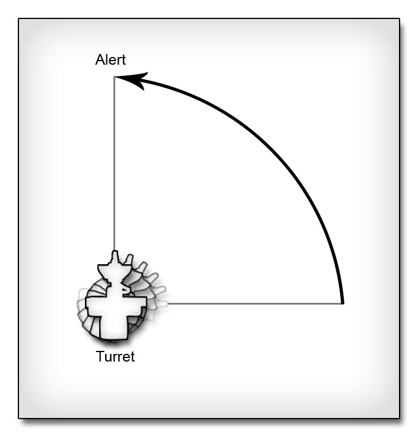
图片 11.37 –炮塔在进入到Idle(空闲)位置之前首先旋转到Alert(激活)位置。 12. 如果先前的状态是另一个状态，那么将可以简单地直接调用BeginIdling()函数。
else BeginIdling();13. 保存脚本来保存您的成果。 <<<<指南结束 >>>>
指南 11.15 – 炮塔, 第十一部分: ALERT 的状态体 第一部分
如果炮塔的Idle状态和DEFCON 5类似，那么Alert状态大约是DEFCON 3。炮塔绝不会处于进攻模式中，但是这确实是准备就绪过程中。在Alert状态中，炮塔现在正在扫描区域并积极地搜索任何可见的敌人：移动的或不移动的敌人。在本指南中，将会创建Tick()和 IdleTimer()函数。 1. 打开ConTEXT 和the MU_AutoTurret.uc脚本。 2. 在Alert状态中重载Tick()函数，在炮塔类的全局函数Tick()上添加一个小的代码块。这个代码块将会导致通过使炮塔的旋转值进行动画来扫描区域。在Alert状态中声明Tick()函数。
function Tick(Float Delta)
{
}
3. 这个Tick()函数中需要一个局部的Rotator。这个旋转值是每次更新中要添加到炮塔的当前旋转值上的旋转量，从而使得炮塔进行移动来扫描区域。
local Rotator AnimRot;4. 在这个函数中的任何其它代码被执行之前，需要调用Tick()函数的全局版本。
Global.Tick(Delta);5. AnimRot的Yaw属性可以通过把MinTurretRotRate和自从上一次更新后过去的时间量或Delta相乘来计算。然后，把这个Rotator(旋转器)和指定作为PivotController的BoneRotation属性的炮塔旋转值相加。
AnimRot.Yaw = MinTurretRotRate * Delta; PivotController.BoneRotation += AnimRot;
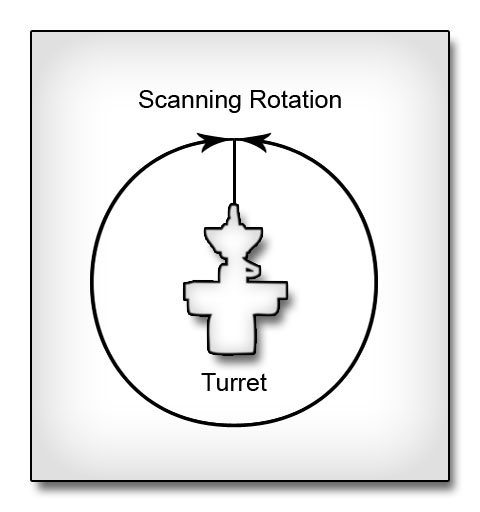
图片 11.38 –炮塔通过围绕着支点的Yaw(偏转)轴进行旋转来扫描区域。 6. Tick()函数的最后一部分是根据RotLimit结构体考虑到任何对旋转值限制。如果blimitYaw属性为真，并且当前旋转值的Yaw处于RotLimitMin 和RotLimitMax Rotators(旋转器)设置的限制之外，那么将会把MinTurretRotrate的值乘以-1来反转炮塔的旋转方向。
if(RotLimit.bLimitYaw)
{
if( PivotController.BoneRotation.Yaw >= RotLimit.RotLimitMax.Yaw ||
PivotController.BoneRotation.Yaw <= RotLimit.RotLimitMin.Yaw )
{
MinTurretRotRate *= -1;
}
}

图片 11.39 –现在，用于扫描的旋转值受到限制，所以导致它在来回地交替扫描。 7. IdleTimer()是一个简单的计时器函数，它没有参数。
function IdleTimer()
{
}
8. 这个函数的唯一目的是如果炮塔还没有被销毁，那么它会使得炮塔返回到Idle(空闲)状态。
if(!bDestroyed)
{
GotoState('Idle');
}
9. 保存脚本来保存您的成果。
<<<< 指南结束 >>>>
指南 11.16 – 炮塔,第十二部分: ALERT 的状态体 第二部分
继续学习Alert状态，BeginState()事件在炮塔进入到Alert状态时处理炮塔的初始化。尽管它提供了通过PreviousStateName参数给出的先前状态来分别地执行不同动作的方法，但是无论炮塔离开哪个状态时，Alert状态的初始化都是一样的。这个函数将会把炮塔放入到适当的姿势中，使它开始扫描区域并计算进行一遍完全扫描所需要的时间量以及决定炮塔应该从哪个方向开始旋转来执行扫描。 1. 打开ContEXT和MU_AutoTurret.uc脚本。 2. 为Alert状态声明BeginState()事件。
event BeginState(Name PreviousStateName)
{
}
3. 这个事件需要两个局部变量。第一个是一个Rotator，它用于存放扫描开始处的初始旋转值。这个旋转值是TurretRotations结构体中的AlertRotation属性中指定的旋转值，并且它的Yaw值会被炮塔的当前Yaw值所取代。另一个局部变量是一个浮点值，它表示了炮塔扫描过那个区域所要持续的时间量。
local Rotator AlertRot; local Float RevTime;4. 首先会把AlertRot的旋转值赋值为AlertRotation的值。然后，使用炮塔的当前Yaw值代替它的Yaw值，并且该值会在0到65536范围内进行单位化处理，从而删除了到这时为止可能已经执行的任何完全旋转。
AlertRot = TurretRotations.AlertRotation; AlertRot.Yaw = PivotController.BoneRotation.Yaw % 65536;5. 此时，需要采用两个路径中的哪一个需要根据炮塔的Yaw旋转值是否受到限制来处理。如果Yaw受到限制，由RotLimit结构体的bLimitYaw属性决定，那么当计算执行一次区域扫描的总的时间量时需要考虑到这个限制。这次扫描包括从当前的Yaw(偏转值)处平移到远处限制，返回到近处限制，然后在到达AlertRotation指定的Yaw值处。首先，创建If语句。
if(RotLimit.bLimitYaw)
{
}
else
{
}
6. 在If语句块中，创建另一个If语句判断，通过把当前的Yaw值和Yaw旋转值限制的中间点进行比较来查看那个限制更远。
if(AlertRot.Yaw > Float(RotLimit.RotLimitMax.Yaw + RotLimit.RotLimitMin.Yaw) / 2.0)
{
}
else
{
}
针对炮塔的当前旋转值，决定炮塔进行一次完整扫描所需要的时间是通过获得远处限制和当前旋转值的差值，并把那个值同炮塔的初始最大旋转速率相除来计算的。然后，从最小限制到最大限制处进行一次完整扫描所花费的时间量也使用相同的方法计算的，然后把该结果值和前面的计算结果相加。最后，计算从远处限制平移到AlertRotation所需要的事件，并把它加在刚刚计算出的全部结果上。然后把最终的值赋值给每个If/Else语句块中的RevTime变量。计算中的唯一的不同是限制是颠倒的，从而减法操作数的顺序是颠倒的。
if(AlertRot.Yaw > Float(RotLimit.RotLimitMax.Yaw + RotLimit.RotLimitMin.Yaw) / 2.0)
{
RevTime = (Float(AlertRot.Yaw - RotLimit.RotLimitMin.Yaw) / Float(OrigMinRotRate)) +
(Float(RotLimit.RotLimitMax.Yaw - RotLimit.RotLimitMin.Yaw) / Float(OrigMinRotRate)) +
(Float(RotLimit.RotLimitMax.Yaw - TurretRotations.AlertRotation.Yaw) / Float(OrigMinRotRate));
}
else
{
RevTime = (Float(RotLimit.RotLimitMax.Yaw - AlertRot.Yaw) / Float(OrigMinRotRate)) +
(Float(RotLimit.RotLimitMax.Yaw - RotLimit.RotLimitMin.Yaw) / Float(OrigMinRotRate)) +
(Float(TurretRotations.AlertRotation.Yaw - RotLimit.RotLimitMin.Yaw) / Float(OrigMinRotRate));
}
根据炮塔开始旋转的方式的不同，MinTurretRotRate会被设置为OrrigTurretRotRate或OrigTurretRotRate 乘以-1的结果。
if(AlertRot.Yaw > Float(RotLimit.RotLimitMax.Yaw + RotLimit.RotLimitMin.Yaw) / 2.0)
{
RevTime = (Float(AlertRot.Yaw - RotLimit.RotLimitMin.Yaw) / Float(OrigMinRotRate)) +
(Float(RotLimit.RotLimitMax.Yaw - RotLimit.RotLimitMin.Yaw) / Float(OrigMinRotRate)) +
(Float(RotLimit.RotLimitMax.Yaw - TurretRotations.AlertRotation.Yaw) / Float(OrigMinRotRate));
MinTurretRotRate = -1 * OrigMinRotRate;
}
else
{
RevTime = (Float(RotLimit.RotLimitMax.Yaw - AlertRot.Yaw) / Float(OrigMinRotRate)) +
(Float(RotLimit.RotLimitMax.Yaw - RotLimit.RotLimitMin.Yaw) / Float(OrigMinRotRate)) +
(Float(TurretRotations.AlertRotation.Yaw - RotLimit.RotLimitMin.Yaw) / Float(OrigMinRotRate));
MinTurretRotRate = OrigMinRotRate;
}

图片 11.40 –具有Yaw限制的炮塔的一次可能的扫描运动。 7. 在BeginAlert()函数的主要Else语句块中是比较简单的，因为没有对其施加限制。在这种情况下，炮塔将会从它的当前位置旋转很长一段路返回到AlertRotation处。那么RevTime将会立刻被初始化为FullRevTime的值。
RevTime = FullRevTime;接下来，把当前的旋转值和AlertRotation来决定炮塔需要旋转向的方向。把一般的旋转添加到AlertRotation的Yaw属性上。通过把当前的值和那个值进行比较，便可以炮塔限制到朝向一个半球还是朝向另一个半球。
if(AlertRot.Yaw > (TurretRotations.AlertRotation.Yaw + 32768))
{
}
else
{
}
从完整旋转时间中删除的时间量是通过当前的旋转值和AlertRotation中的AlertRotation或一次完全旋转的差值来计算的。然后把差值结果和OrigTurretRotRate相除。因为这个计算的目的是根据当前的旋转值找到完整旋转中需要忽略的部分，所以这些计算中的减法的执行顺序应该满足结果是负值的条件。
if(AlertRot.Yaw > (TurretRotations.AlertRotation.Yaw + 32768))
{
RevTime += Float(AlertRot.Yaw - (TurretRotations.AlertRotation.Yaw + 65536)) /
Float(OrigMinRotRate);
}
else
{
RevTime += Float(TurretRotations.AlertRotation.Yaw - AlertRot.Yaw) /
Float(OrigMinRotRate);
}
MinTurretRotRate值设置为和前一步骤中一样的值。
if(AlertRot.Yaw > (TurretRotations.AlertRotation.Yaw + 32768))
{
RevTime += Float(AlertRot.Yaw - (TurretRotations.AlertRotation.Yaw + 65536)) /
Float(OrigMinRotRate);
MinTurretRotRate = -1 * OrigMinRotRate;
}
else
{
RevTime += Float(TurretRotations.AlertRotation.Yaw - AlertRot.Yaw) /
Float(OrigMinRotRate);
MinTurretRotRate = OrigMinRotRate;
}

图片 11.41 –未受到限制的炮塔的可能扫描运动。 8. 通过这四个程序中的一个设置完RevTime 和 MinTurretRotrate后，将会把计时器设置在所有If语句的外面来运行IdleTimer()函数。计时器的速率是RevTime + 1.0秒，它说明了AlertRot姿势的初始旋转值。
SetTimer(RevTime + 1.0,false,'Idletimer');9. 一旦设置了计时器，便可以通过使用DoRotation()函数来开始对AlertRot进行插值。
DoRotation(AlertRot, 1.0);10. 最后，如果指定了WakeSound 音效，则播放该音效。
if(TurretSounds.WakeSound != None) PlaySound(TurretSounds.WakeSound);11. 保存脚本来保存成果。 <<<< 指南结束>>>>
指南 11.17 – 炮塔, 第十三部分: DEFEND 的状态体 第一部分
炮塔的开火功能是有两个函数处理的。第一个函数是TimedFire()，它产生射弹，激活枪嘴火焰，并播放开火生效。第二个函数是StopMuzzleFlash()，正如您可能从它的名称总推测出来的，它简单地使得枪嘴火焰处于不活动状态。本指南中将会对这两个函数的创建进行讲解。 1. 打开ConTEXT 和MU_AutoTurret.uc脚本。 2. StopMuzzeFlash()函数是非常简单的，所以我们从它开始学习。在Defend状态体中声明这个函数，不带参数。
function StopMuzzleFlash()
{
}
3. 通过调用ParticleSystemComponent(粒子系统组件)的DeactivateSystem() 函数来停止枪嘴火焰粒子系统。这是StopMuzzleFlash()函数的整个函数体。
MuzzleFlashEffect.DeactivateSystem();4. TimedFire()是一个计时器函数，当炮塔开始Defend状态时，它将会被设置为循环，当炮塔离开Defend状态时将会清除这个循环。现在声明这个函数。
function TimedFire()
{
}
5. 需要声明一个局部的Projectile变量，它用于引用生成的射弹。
local Projectile Proj;6. 通过使用从FireRotation变量中获得旋转值的FireLocation处的ProjClass变量中指定的类来生成的射弹，然后把它分配给Proj局部变量。
Proj = Spawn(ProjClass,self,,FireLocation,FireRotation,,True);7. 如果生成射弹成功，并且将不会删除这个射弹，那么将会调用射弹的Init()函数，并向该函数中传入射弹要运行的方向。这个函数通过把方向Vector传入到函数中并相应地初始化它的Velocity来设置射弹的旋转值。
if( Proj != None && !Proj.bDeleteMe )
{
Proj.Init(Vector(FireRotation));
}
注意：这段代码是直接从UT3的武器类中摘借的。当您书写新的代码时使用这些已有的类似的代码作为模型通常是个好主意。
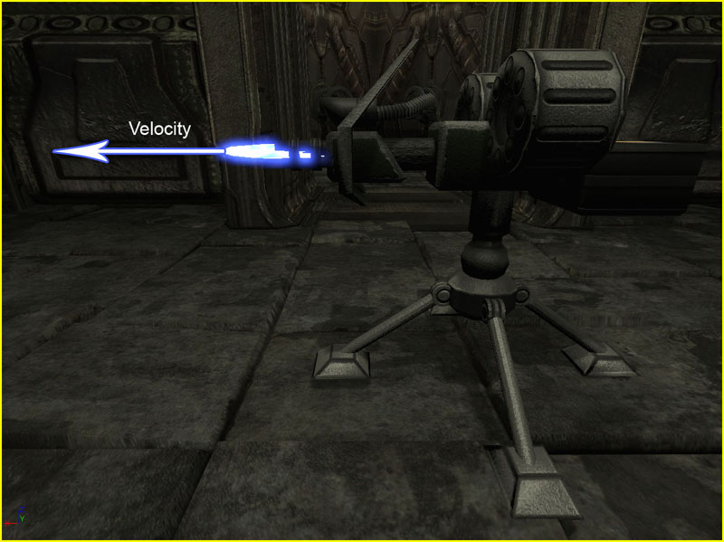
图片 11.42 –产生射弹并沿着射弹的瞄准方向初始化速度。 8. 接下来，假设指定了枪嘴火焰发射器，那么激活枪嘴火焰，并启动一个关闭枪嘴火焰的计时器。
if(TurretEmitters.MuzzleFlashEmitter != None)
{
MuzzleFlashEffect.ActivateSystem();
SetTimer(TurretEmitters.MuzzleFlashDuration,false,'StopMuzzleFlash');
}

图片 11.43 –当激活枪嘴火焰特效时，便可以看到枪嘴火焰。 9. 最后，如果设计人员指定了要播放的开火声音，则播放该声音。
if(TurretSounds.FireSound != None) PlaySound(TurretSounds.FireSound);10. BeginFire()函数是一个计时器函数，它通过为 TimedFire()函数设置循环计时器来启动开火过程，并通过切换bCanFire变量来启用目标瞄准进程。声明这个函数。
function BeginFire()
{
}
11. 如果RoundsPerSec的值大于0，那么将会执行TimedFire()函数。它使用RoundsPerSec属性的倒数作为速率、设置它可以循环。同时设置bCanFire属性为真。
if(RoundsPerSec > 0)
{
SetTimer(1.0/RoundsPerSec,true,'TimedFire');
bCanFire = true;
}
12. 保存脚本来保存您的成果。
<<<<指南结束 >>>>
指南 11.18 – 炮塔, 第十四部分: DEFEND 的状态体 第二部分
继续学习Defend状态，声明BeginState()和EndState()事件来初始化及终止Defend状态。 1. 打开ConTEXT和MU_AutoTurret.uc脚本。 2. 声明BeginState()事件，并且具有参数PreviousStateName。
event BeginState(Name PreviousStateName)
{
}
3. 如果炮塔正在从Alert状态进入到Denfend状态，那么如果要使它积极地防止炮塔被放置为Idle状态，则必须清除IdleTimer。
if(PreviousStateName == 'Alert')
{
if(IstImerActive('IdleTimer'))
ClearTimer('IdleTimer');
}
4. bCanFire属性初始值总是设置为False，从而避免任何不需要的目标瞄准动作。
bCanFire = false;5. 同样，在BeginState()事件中，通过调用SkeletalMeshComponent的GetSocketWorldLocationAndRotation()函数并向它传入两个变量，来把FireLocation 和 FireRotation属性初始化为位于枪嘴尖端的插槽的位置和旋转值。
Mesh.GetSocketWorldLocationAndRotation(TurretBones.FireSocket,FireLocation,FireRotation);6. 接下来，炮塔使用DoRotation()函数进行插值，从而面向当前的敌人。
DoRotation(Rotator((EnemyTarget.Location - FireLocation) << Rotation), 1.0);以下的计算获取从枪嘴尖端到敌人之间的向量，并把那个向量转换到世界空间向量。然后，将得到的向量分配给Roator，从而来获得使炮塔指向敌人需要的旋转值。
Rotator((EnemyTarget.Location - FireLocation) << Rotation)

图片 11.44 –炮塔旋转面向EnemyTarget (敌人目标) 7. 如果设计人员指定了声效，则播放SpinUpSound。
if(TurretSounds.SpinUpsound != None) PlaySound(TurretSounds.SpinUpSound);8. BeginState()事件中的最后一步是启动计时器来在1.0秒钟后执行BeginFire()函数。这允许炮塔在向任何射击目标开火前完成旋转插值。
SetTimer(1.0,false,'BeginFire');9. EndState()事件的声明和BeginState()事件非常类似，它仅有一个Name参数。
event EndState(Name NewStateName)
{
}
10. Defend状态中的这个事件的唯一的目的是清除TimedFire()计时器，从而停止炮塔开火。
ClearTimer('TimedFire');
11. 保存脚本来保存您的成果。
<<<<指南结束>>>>
指南 11.19 – 炮塔, 第十五部分: DEFEND 的状态体 第三部分
Defend状态的最后一部分是状态中的Tick()函数所包含的目标瞄准代码。 1. 打开ConTEXT和the MU_AutoTurret.uc脚本。 2. 在Defend状态中声明Tick()函数。
function Tick(Float Delta)
{
}
3. 这个版本的Tick()函数需要两个局部Rotator(旋转量)来执行目标瞄准计算，同时也需要一个局部的Int变量。
local Rotator InterpRot; local Rotator DiffRot; local Int MaxDiffRot;4. 在添加任何代码之前，我们需要调用Tick()函数的全局实现，以便即使重载了这个函数，也仍然可以执行获得射击目标的代码。
Global.Tick(Delta);5. 仅当允许炮塔开火时，才执行Tick()函数中的设计瞄准目标代码。
if(bCanFire)
{
}
6. 在If语句块中，计算了从炮塔到敌人间的方向向量。在每次tick(更新)中都会计算这个向量，以便可以跟踪敌人的运动。
EnemyDir = EnemyTarget.Location - Location;

图片 11.45 –EnemyDir是从炮塔到 EnemyTarget (敌人目标)间的方向。 7. 接下来，如果满足一下任何条件之一，那么所有的目标瞄准变量都会被初始化或重置。
- 已经获得了一个新的敌人。

图片 11.46 –炮塔获得一个新的EnemyTarget (敌人目标)。
- 当前的敌人已经移动。

图片 11.47 –炮塔的敌人目标在移动。
- 已经完成了当前的目标瞄准插值。
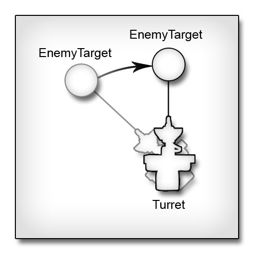
图片 11.48 –炮塔已经旋转面向固定的EnemyTarget (敌人目标)。
if( EnemyTarget != LastEnemyTarget ||
EnemyDir != LastEnemyDir ||
ElapsedTime >= TotalInterpTime )
{
}
a. 首先，使用当前的值来更新LastEnemyTarget 和 LastEnemyDir变量。
8. 否则，增加当前插值经过的时间。
LastEnemyDir = EnemyDir; LastEnemyTarget = EnemyTarget;b. 接下来，初始化用于插值的开始旋转值和结束旋转值。
StartRotation = PivotController.BoneRotation; TargetRotation = Rotator((EnemyTarget.Location - FireLocation) << Rotation);c. 然后，通过获取开始旋转值和结束旋转值之间的不同来计算DiffRot。通过查找最终的DiffRot的最大元素、Pitch, Yaw或Roll来计算MaxDiffRot。在一个表达式中嵌套使用两个Max()函数来执行这个计算。
DiffRot = TargetRotation - StartRotation; MaxDiffRot = Max(Max(DiffRot.Pitch,DiffRot.Yaw),DiffRot.Roll);d. 通过把MaxDiffRot除以MaxTurretRotRate，并对最终的结果取绝对值来计算对期望旋转值进行插值所需要的总时间。
TotalInterpTime = Abs(Float(MaxDiffRot) / Float(MaxTurretRotRate));e. 最后，设置ElapsedTime等于自从上一次更新后过去的时间量。
ElapsedTime = Delta;最终的If语块是：
if( EnemyTarget != LastEnemyTarget ||
ElapsedTime >= TotalInterpTime ||
EnemyDir != LastEnemyDir )
{
LastEnemyDir = EnemyDir;
LastEnemyTarget = EnemyTarget;
StartRotation = PivotController.BoneRotation;
TargetRotation = Rotator((EnemyTarget.Location - FireLocation) << Rotation);
DiffRot = TargetRotation - StartRotation;
MaxDiffRot = Max(Max(DiffRot.Pitch,DiffRot.Yaw),DiffRot.Roll);
TotalInterpTime = Abs(Float(MaxDiffRot) / Float(MaxTurretRotRate));
ElapsedTime = Delta;
}
else
{
ElapsedTime += Delta;
}
9. 一旦设置了插值所需要的所有变量，那么将会计算插值的当前alpha，并执行插值，将最终的结果赋值给局部Rotator(旋转量) InterpRot。
RotationAlpha = FClamp(ElapsedTime / TotalInterpTime,0.0,1.0); InterpRot = RLerp(StartRotation,TargetRotation,RotationAlpha,true);
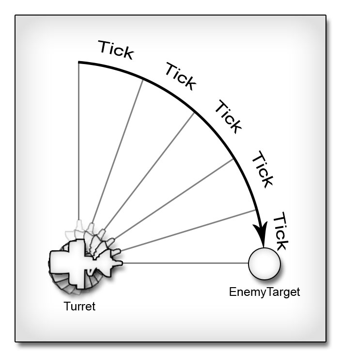
图片 11.49 –炮塔在每次更新中向最终的期望旋转值移动一部分。 10. 最终的旋转值会受到设计人员实现的任何关于旋转的限制的影响。
if(RotLimit.bLimitPitch)
InterpRot.Pitch = Clamp(InterpRot.Pitch,
RotLimit.RotLimitMin.Pitch,
RotLimit.RotLimitMax.Pitch );
if(RotLimit.bLimitYaw)
InterpRot.Yaw = Clamp( InterpRot.Yaw,
RotLimit.RotLimitMin.Yaw,
RotLimit.RotLimitMax.Yaw );
if(RotLimit.bLimitRoll)
InterpRot.Roll = Clamp( InterpRot.Roll,
RotLimit.RotLimitMin.Roll,
RotLimit.RotLimitMax.Roll );
11. 最终插值后的旋转值被分配给PivotController的BoneRotation来更新炮塔。
PivotController.BoneRotation = InterpRot;12. 使用新的炮塔方位来更新炮塔的开火位置及旋转值变量。
Mesh.GetSocketWorldLocationAndRotation(TurretBones.FireSocket,FireLocation,FireRotation);13. 最后，调整开火旋转值，使它具有一定的随机瞄准误差。
FireRotation.Pitch += Rand(AimRotError * 2) - AimRotError; FireRotation.Yaw += Rand(AimRotError * 2) - AimRotError; FireRotation.Roll += Rand(AimRotError * 2) - AimRotError;它计算了一个0到AimRotError值的2倍之间的一个随机数。然后通过使用AimRotError对最终的值进行偏移，从而有效地在AimRotError和AimRotError之间产生一个随机值。这个随机值会被添加到FireRotation的每个组件上。

图片 11.50 –这些射弹的轨迹变化是由于随机偏移了炮塔的瞄准而导致的。 14. 保存脚本来保存您的成果。 <<<<指南结束 >>>>
指南 11.20 – 炮塔, 第十六部分: DEAD的状态体
The final state belonging to the turret class is the Dead state. This state is responsible for performing all destruction effects as well as making sure no more target acquisition or damage functionality is performed. 炮塔类的最终状态是Dead状态。这个状态负责执行所有的销毁特效，并且确保了不会再执行获取任何目标或损害功能。 1. 打开ConTEXT和the MU_AutoTurret.uc脚本。 2. 在这个过程中将会忽略Tick()和TakeDamage()函数，所以将不再执行它们。ignores Tick, TakeDamage;3. PlayDeath()函数是一个计时器函数，它处理播放销毁特效。
function PlayDeath()
{
}
4. 在PlayDeath()函数中，如果设计人员已经设置了销毁的粒子特效，那么将会播放该特效。
if(TurretEmitters.DestroyEmitter != None) DestroyEffect.ActivateSystem();

图片 11.51 –激活了默认的销毁特效。 5. 如果死亡声效存在，则播放该声效。
if(TurretSounds.DeathSound != None) PlaySound(TurretSounds.DeathSound);6. 如果设计人员设计了DestroyedMesh，那么该网格物体将作为炮塔的新的骨架网格物体。
if(DestroyedMesh != None) Mesh.SetSkeletalMesh(DestroyedMesh);7. 最后，如果已经设置了bStopDamageEmmiterOnDeath，那么将会使损害粒子特效处于不活动状态。
if(TurretEmitters.bStopDamageEmitterOnDeath) DamageEffect.DeactivateSystem();8. 当把bRandomDeath变量设置为True时，炮塔必须创建一个考虑了任何旋转限制的随机旋转值，并对那个旋转值进行插值。DoRandomDeath()函数处理这个功能。
function DoRandomDeath()
{
}
9. 使用一个局部的名称为DeathRot的Rotator(旋转量)来存储随机旋转值。
local Rotator DeathRot;10. RotRand()函数用于计算随机旋转值。向函数中传入值True则包含Roll组件。最终得到的旋转值被分配给DeathRot变量。
DeathRot = RotRand(true);11. 然后把新的旋转值的组件根据已经设置的任何旋转限制进行区间限制。
if(RotLimit.bLimitPitch)
DeathRot.Pitch = Clamp( DeathRot.Pitch,
RotLimit.RotLimitMin.Pitch,
RotLimit.RotLimitMax.Pitch );
if(RotLimit.bLimitYaw)
DeathRot.Yaw = Clamp( DeathRot.Yaw,
RotLimit.RotLimitMin.Yaw,
RotLimit.RotLimitMax.Yaw );
if(RotLimit.bLimitRoll)
DeathRot.Roll = Clamp( DeathRot.Roll,
RotLimit.RotLimitMin.Roll,
RotLimit.RotLimitMax.Roll );
12. 最后，调用DoRotation()函数，并向它传入限制的DeathRot来对炮塔进行插值，使它到达新的位置。
DoRotation(DeathRot, 1.0);

图片 11.52 –炮塔呈现出一个随机旋转值。 13. 在Death状态中使用BeginState()事件来初始化前两个函数。
event BeginState(Name PreviousSateName)
{
}
14. 首先，设置bDestroyed变量来标识炮塔已经被销毁。
bDestroyed = true;15. 如果没有使用随机死亡旋转值，那么将会调用DoRotation()函数，并向它传入TurretRotations结构体中指定的DeathRotation作为参数。
if(!TurretRotations.bRandomDeath) DoRotation(TurretRotations.DeathRotation, 1.0);否则，将调用DoRandomDeath()函数。
else DoRandomDeath();

图片 11.53 –炮塔旋转到DeathRotation 处。 16. 然后，当到新的旋转值的插值完成后，则设置计时器来执行PlayDeath()函数。
SetTimer(1.0,false,'PlayDeath');17. 保存脚本来保存您的成果。 <<<<指南结束 >>>>
指南 11.21 炮塔, 第十七部分 –编译及测试
已经写完了炮塔的所有代码，现在我们可以编译脚本并在UnrealEd中对其进行测试了。 1. 将DVD中提供的关于这章的文件中的TurretContent.upk文件复制到Unpublished\CookedPC目录。 2. 编译脚本并修复任何可能存在的问题。 3. 打开UnrealEd，和为本章提供的文件DM-CH_11_Turret.ut3地图。这个地图看上去和在整本书中广泛使用的那个测试地图类似，因为它是那个地图的修改版本。
图片 11.54 – The DM-CH_11_Turret map. 4. 打开通用浏览器，并跳转到Actor Classes(Actor类别)标签。展开Pawn部分并从列表中选择MU_AutoTurret。

图片 11.55 –Actor浏览器中的MU_AutoTurret 类。 5. 右击透视视口，并选择Add MU_AutoTurret Here(添加MU_AutoTurret到这里)。当前的actor应该会出现在地图中。把炮塔围绕X-轴旋转180度，或者通过在属性窗口中调整Movement->Rotation->Roll属性，以便把炮塔颠倒过来。然后把它放到房间的顶棚上，并在房屋的后面放置3个PlayerStarts。

图片 11.56 –炮塔actor被放置在地图中。 6. 选中炮塔actor，按下F4来打开属性窗口。展开Turret 类别来查看它的可编辑属性。尽管对于最初测试目的来说初始值可以工作的很好，但您可以随便地对其作出任何您期望的调整。 7. 通过按下工具条上的Rebuild All(重新构建所有)按钮来重新构建地图。然后右击邻近的空房间并选择Play From Here(从这里播放)。 8. 通过按下Tab键来打开控制台，然后输入‘ghost’，它可以是您在地图中自由飞行，并避开受到炮塔的损害。移动到具有炮塔的房间中。炮塔应该开始瞄准您并对您开火了。
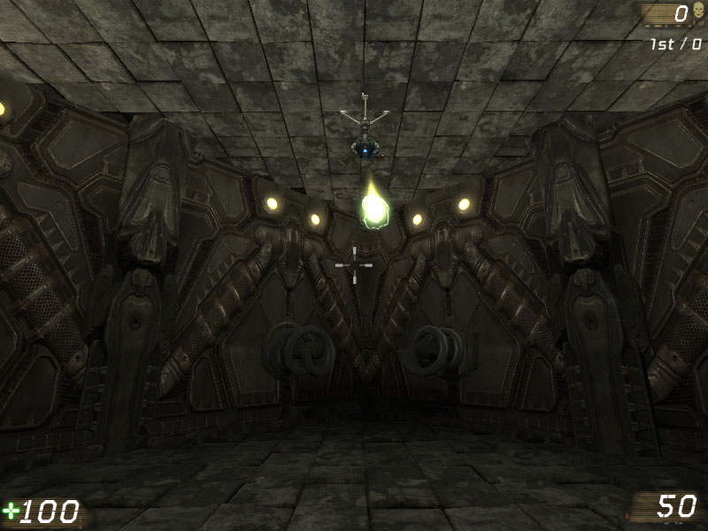
图片 11.57 –炮塔正在向玩家开火。 9. 为了获得在运转中的炮塔的更好的视图，再次打开控制台并输入‘addbots 3’，来向地图中添加三个机器人。炮塔将开始向地图中的新的机器人瞄准并开火。您或许必须把您自己移动到那个房间的外面，然后再回到房间内，炮塔才会把您选做新的敌人。

图片 11.58 –炮塔正在向一个机器人开火。 10. 通过按下Esc键退出地图。调整一下属性，比如RotLimit旋转值，然后继续测试地图，来取保任何东西都可以按照预想的方式工作。 11. 如果您希望保存您的设置，那么请使用新的名称来保存您的地图。 以上便是炮塔指南的整个过程，您已经看到了一个如何使用状态来使actor在不同情境下体现不同行为的粒子。同时，实现了创建完整的新武器的基本功能，向您演示了如何利用AnimTree中的骨架控制器来操作骨骼的方法。 <<<< 指南结束 >>>>
指南 11.22 – 创建UTBOT_PELLET 类
当在前一章创建UTPElletGame类型的游戏时，我们推荐创建自定义的机器人来和这种新的游戏类型一同使用。在本指南中，我们将通过声明UTBot_Pellet类来开始学习创建这种自定义的机器人的过程。 1. 打开ConTEXT并使用UnrealScript轮廓(highlighter)创建一个新的文件。 2. 声明一个UTBot_Pellet类，该类继承UTBot类。这为我们提供了稳固的功能基础。class UTBot_Pellet extends UTBot;3. 为了实现新的功能，需要为这个新类添加几个类成员变量。
var Actor CurrentGoal;这个变量将包含机器人将要导航到的最终目的地的引用，根据机器人当前所在的导航状态的不同，这个引用或者是某种类型的pellet(小球)或者是某个玩家。
var Bool bResetMove;布尔值用于使当前导航到一个pellet(小球)的机器人选择一个新的要导航到的pellet(小球)。当另一个玩家在机器人到达该pellet(小球)之前收集了那个pellet(小球)时，这个变量是有用的。
var Float HPDistanceThreshold;这个值指出了为了在重要性上超过其它pellets(小球)，它指定了HyperPellet的接近程度。
var Float MinAggressiveness; var Float MaxAggressiveness;这两个值代表了机器人的Aggressiveness属性选择随机值的范围。这会使机器人的行为产生一些较小的变化。 4. 继续默认属性代码块，我们可以为我们刚刚声明的某些变量设置默认属性。
defaultproperties
{
}
添加defaultproperties代码块。
MinAggressiveness=0.25 MaxAggressiveness=0.85设置它们的值为0.25到0.85将会给出一个很好的范围，使得机器人的Aggressiveness不会具有极端的效果。
HPDistanceThreshold=512这个值将强制机器人仅在直接地跟在HyperPellet的后面，并且如果一个HyperPellet在机器人的当前位置周围的512单位之内，则不忽略所有其它的pellet(小球)。 5. 现在，将会重载PostBeginPlay()函数，来使用MinAggressiveness 和MaxAggressiveness的范围来设置Aggressiveness变量，而不是使用UTBot类处理它的当前方法。现在声明一个PostbEginPlay()函数。
function PostBeginPlay()
{
}
6. 接下来，需要使用Super关键字在执行任何其它功能之前来调用UTBot类的PostBeginPlay()函数。
Super.PostBeginPlay();7. 然后，使用RandRange()函数把Agressiveness变量设置为MinAggressiveness 和MaxAggressiveness变量指定的范围之内的一个随机值。
Aggressiveness = RandRange(MinAggressiveness, MaxAggressiveness);8. 使用名称UTBot_Pellet.uc，来将脚本保存在MasteringUnrealScript/Classes目录中。 <<<<指南结束 >>>>
指南 11.23 – PELLETCOLLECTING 状态, 第一部分: FINDNEWGOAL() 函数
机器人的行为是有机器人当前所在的状态决定的。添加到UTBot_Pellet类中的第一个状态是PelletCollecting。这个状态会使得机器人通过导航路径网络来查找pellets(小球)。在PelletCollecting状态中，机器人的这种行为从本质上可以细分为以下动作。第一，机器人选择一个目的地。然后，机器人朝向那个目的地移动。一旦机器人到达那个目的地，它便选择一个新的目的地，并重复这个过程。 1. 打开ConTEXT和UTBot_Pellet脚本。 2. 声明新的PelletCollecting状态。
auto state PelletCollecting
{
}
注意当声明状态时使用了auto关键字，它会强制机器人初始处于PelletCollecting状态中。
3. 目的地的选择是由函数处理的。在PelletCollecting状态块中声明这个新函数。
function FindNewGoal()
{
}
4. 这个函数使用了几个局部变量。
local Pellet CurrPellet;这个变量存储着到当前pellet(小球)的引用，因为将会迭代属于UTPelletGame类的PelleInfo的Pellets数组。
local Float Distance;这个变量放置到目前为止找到的最近的pellet(小球)。
local Float currDistance;这个变量存放从机器人到当前pellet(小球)的距离。
local Bool bGoalIsHP;布尔值指定了CurrentGoal是否引用HyperPellet。
local Bool bCurrIsHP;布尔值指定了迭代中的当前pellet(小球)是否是HyperPellet。 5. 首先，机器人检查它是否正在控制一个Pawn。仅当已经为Pawn变量分配了一个引用时，代码才继续执行。
if(Pawn == None) return;6. 接下来，当在迭代过程中比较每个pellet(小球)的距离时设置Distance的值使用某个较大的值，并删除分配给CurrentGoal的任何引用，以便我们可以确保选择一个新的CurrentGoal。
Distance = 1000000.0; CurrentGoal = None;7. 建立一个迭代器，使得它在属于使用CurrPellet局部变量存放每个pellet的引用的UTPelletGame的PelletInfo的Pellets(小球)数组中进行迭代。
foreach UTPelletGame(WorldInfo.Game).PelletInfo.Pellets(CurrPellet)
{
}
8. 初始化currDistance, bGoalIsHP及bCurrIsHP变量。currDistance变量的值是使用VSize()函数计算的从CurrPellet到机器人的Pawn之间的距离。两个布尔值将使用IsA()函数来分别判断CurrentGoal和CurrPellet是否是HyperPellets。
currDistance = VSize(CurrPellet.Location - Pawn.Location);
bGoalIsHP = CurrentGoal.IsA('HyperPellet');
bCurrIsHP = CurrPellet.IsA('HyperPellet');
9. If语句由4个单独的条件组成，只要满足其中一个，便可以决定是否选择当前的pellet(小球)作为新的CurrentGoal。
if( (CurrentGoal != none && bGoalIsHP && bCurrIsHP && currDistance < Distance) ||
(CurrentGoal != none && !bGoalIsHP && bCurrIsHP && currDistance < HPDistanceThreshold) ||
(CurrentGoal != none && !bGoalIsHP && currDistance < Distance) ||
(CurrentGoal == none && currDistance < Distance) )
{
}
以下按照这四个条件在代码中出现的顺序对其进行了解释。
- 存在一个目标，并且目标和当前的pellet都是HyperPellets，而当前的pellet(小球)比目标近。

图片 11.59 –目标和当前的pellet都是HyperPellets，当前的pellet(小球)较近。
- 存在一个目标，当前的pellet是HyperPellet，但目标不是，并且当前的pellet比HPDistanceThreshold近。
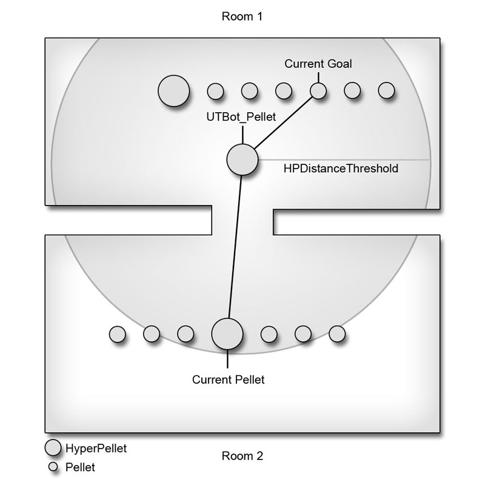
图片 11.60 –当前的pellet (小球)是HyperPellet ，目标是普通的Pellet (小球)，并且当前的pellet (小球)在HPDistanceThreshold 之内。
- 设立一个目标，目标不是HyperPellet，当前的pellet比目标近。

图片 11.61 –当前的pellet (小球)和目标多是普通的pellet，当前的pellet较近。
- 没有设立目标，当前的pellet比Distance的值近。

图片 11.62 –当前没有目标，并且当前的pellet比当前的距离值近。 10. 如果满足任何前述条件，那么当前的pellet(小球)将会被设置为新的CurrentGoal，并使用从机器人到当前的pellet(小球)的距离来更新Distance的值。
CurrentGoal = CurrPellet; Distance = currDistance;11. 保存脚本来保存您的成果。 <<<< 指南结束。 >>>>
指南 11.24 – PELLETCOLLECTING 状态, 第二部分: HASREACHEDGOAL() 函数
添加到PelletCollecting状态中的第二个函数是HasReachedGoal()。这个函数通过检测机器人的位置并把这个位置和目的地的位置进行比较来判定机器人是否已经到达它的最终目的地。如果它们之间的距离比机器人的碰撞半径小，那么将会假设机器人已经到达了它的目的地，然后它会选择一个新的目的地。 1. 打开ConTEXT和UTBot_Pellet.uc脚本。 2. 在PelletCollecting状态中声明函数HasReachedGoal()，该函数具有布尔返回值。
function Bool HasReachedGoal()
{
}
3. 这个函数由一系列返回True或False的If语句组成。第一个判断条件确保已经为机器人分配了一个Pawn。如果没有分配，那么将不会再继续执行这个函数，它将会返回False 。
if(Pawn==none) return false;4. 接下来，另一个If语句判断是否已经真正地设置了一个CurrentGoal 和 MoveTarget。CurrentGoal代表最终的目的地，而MoveTarget代表导航到最终目的地过程重要经过的中间路径节点。如果没有设置这两个节点中的任何一个，那么将需要设置一个新的目的地，从而使得函数返回True。
if(CurrentGoal == None || MoveTarget == none) return true;5. 如果满足条件，那么最后一个If语句也应该返回True。这个语句判断bResetMove的值，如果为真，那么则返回真来选择新的目的地。另外，这个判断也用于查看机器人是否已经到达了最终的目的地。
if( bResetMove || VSize(CurrentGoal.Location-Pawn.Location) < Pawn.CylinderComponent.CollisionRadius ) return true;注意：把这个语句从前面的语句分离出来的原因是非常简单的，是为了保证代码更加简单易读。如果一个If语句中有一大堆条件是代码变得非常的难于管理。将这些if语句细分为较小的独立的判断模块可以是代码变得简单易读，尽管我们正在使用&&操作符，我们把它们分组也会使得代码执行变快，因为只要其中一个条件失败整个语句判断就会失败，这会节约很多处理时间。

图片 11.63 –机器人必须在目标的碰撞半径之内，从而可以把它注册为可到达的目标。 6. 最后，在所有的If语句之后，函数将会返回False。
return false;7. 保存脚本来保存您的成果。 <<<<指南结束 >>>>
指南 11.25 – PELLETCOLLECTING 状态代码
PelletCollecting状态的最后一段代码是状态代码本身。这段代码不包含在函数中，而是当把机器人放入到PelletCollecting状态时它开始运行。当机器人处于PelletCollecting状态时，这段代码是告诉机器人实际是告诉机器人实际做什么的代码。 注意：在本指南及后续指南中的状态代码中使用的很多函数都是latent函数，这意味着仅可以从状态代码中调用这些函数而不能从任何函数中调用它们。 1. 打开ConTEXT和UTBot_pellet.uc脚本。 2. 状态代码放置在状态中的所有函数声明的后面，以标签开始，在这个例子中标签是Begin。Begin:3. 每次状态开始时，将会通过调用HasReachedGoal()函数来执行一次判断来决定机器人是否已经到达了它的当前目的地，并使用它的返回值作为If语句中的条件。如果函数返回True，那么将会调用FindNewGoal()函数来为机器人找出一个新的目的地。
if(HasReachedGoal())
{
FindNewGoal();
}
4. 接下来，另一个If语句判断是否找到了新的目的地。
if(CurrentGoal != None)
{
}
5. 在If语句中，可以采取这两个动作中的其中一个。首先，机器人使用ActorReachable()函数判断从它的当前位置是否可以直接到达CurrentGoal。这个函数判定是否在不需要先通过导航路径网络导航到一个中间路径节点的情况下直接地导航到传入到函数中的Actor。如果CurrentGoal是可到达的，那么机器人将会通过MoveToward()函数直接朝那个actor运动。
if(Actorreachable(CurrentGoal))
{
MoveToward(CurrentGoal);
}
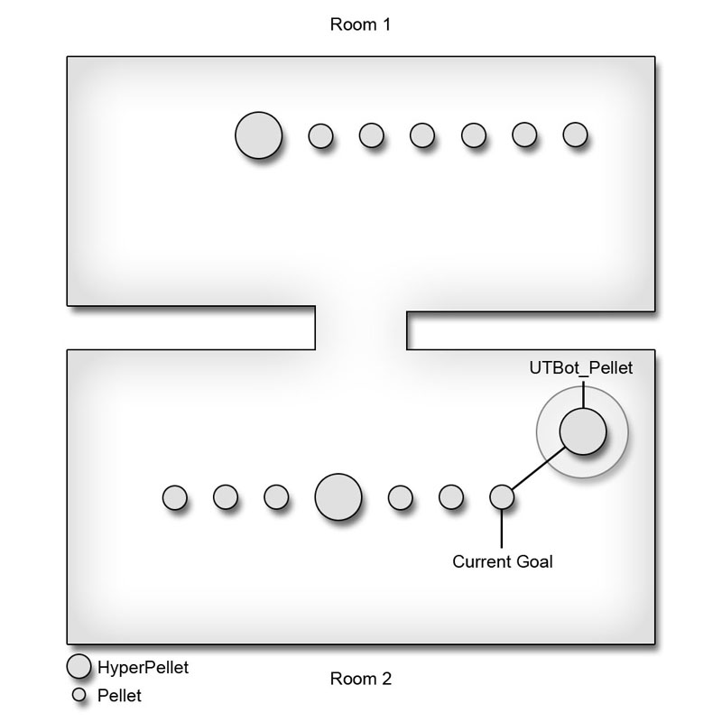
图片 11.64 –机器人直接地朝目标运动。 6. 如果不能直接地到达CurrentGoal，那么为了最终到达目的地，机器人需要使用路径网络来查找一个要移动到的中间路径节点。FindPathToward()通过最终的期望目的地，并返回到达最终目的地的路径上的下一个路径节点。然后把那个路径节点传入到MoveToward()函数中，来指引机器人间接地向CurrentGoal运动。
else
{
MoveTarget = FindPathToward(CurrentGoal);
MoveToward(MoveTarget,CurrentGoal);
}
图片 11.65 –机器人朝向一个间接的路径节点运动。 7. 所有先前状态代码的后面，在任何If语句的外面，调用LatentWhatToDoNext()函数。这个函数最终将会导致调用ExecuteWhatToDoNext()函数，该函数是机器人做出重大决定的地方。我们将会在后续的指南中实现代码来使得机器人使用新的PelletCollecting状态及添加到UTBot_pellet类的其它状态。
LatentWhatToDoNext();8. 保存脚本来保存您的成果。 <<<< 指南结束 >>>>
指南 11.26 – PELLETHUNTING 状态, 第一部分: FINDNEWGOAL() 函数
在PelletCollecting状态中，机器人搜出还没有被收集的pellets。一旦最初已经收集了所有的pellet，那么机器人将使用PelletHunting状态来搜索当前具有最高分数的玩家，并力争抓获并杀死它们来获取它们的分数。这个状态扩展了PelletCollecting状态，并且它将会重写包含在PelletCollecting状态中的两个函数。 1. 打开ConTEXT 和UTBot_Pellet.uc脚本。 2. 在PelletCollecting状态后，声明新的PelletHunting状态，使它扩展PelletCollecting状体。
state PelletHunting extends PelletCollecting
{
}
3. 首先声明FindNewGoal()函数来重写从PelletCollecting状态中继承的版本。
function FindNewGoal()
{
}
4. FindNewGoal()函数的思想仍然保留；它定位机器人要移动到的最理想的目的地。在这个实例中，最理想的目的地是具有最高分数的玩家，而不是机器人本身。这个函数就爱那个会迭代关卡中的所有控制器并比较它们的分数。这将需要两个局部变量：一个用于放置当前的控制器，一个用于放置最高的分数。
local Controller CurrController; local Int CurrScore;5. 首先，检查控制器的Pawn是否有一个有效的引用。如果没有，则不需要继续执行这个函数。
if(Pawn==none) return;6. 接下来，初始化CurrentGoal 和CurrScore。CurrentGoal变量的引用指向一个已删除的actor，而CurrScore变量被设置为-1，从而确保即使所有其它的玩家都没有分数，也会选择一个目的地。
CurrScore = -1; CurrentGoal = None;7. 现在使用AllControllers迭代器在关卡中的每个控制器间进行循环。这里使用了基类Controller，从而确保即包含玩家也包含机器人，并且使用局部变量CurrController来放置当前的控制器。
foreach WorldInfo.AllControllers(class'Engine.Controller',CurrController)
{
}
8. 在迭代器内部，使用Self关键字来把当前的控制器和机器人进行比较，从而确保当前的控制器不是那个我们正在讨论的机器人。同时，会把当前的控制器的分数和CurrScore 进行比较，来查看控制器是否具有更高的分数。如果两个条件都满足，当前的控制器的Pawn将会被设置为CurrentGoal，它的分数将会被设置为CurrScore。
if(CurrController != self && CurrController.PlayerReplicationInfo.Score > CurrScore)
{
CurrScore = CurrController.PlayerReplicationInfo.Score;
CurrentGoal = CurrController.Pawn;
}
9. 保存脚本来保存您的成果。
<<<< 指南结束 >>>>
指南 11.27 – PELLETHUNTING 状态, 第二部分: HASREACHEDGAOL() 函数
因为机器人现在正在竭力地抓获玩家，所以到达目的地的定义稍微地有了些变化。在PelletHunting状态中，在认为机器人已经到达那个目的地之前，机器人仅需要处于目的地的某个特定范围之内即可。通常直接地跑向您的敌人并不是最好的进攻侧路。所以，一旦机器人处于可接受的半径之内，便会告诉它使用现有的功能开始捕获及攻击玩家。 1. 打开ConTEXT和UTBot_Pellet.uc脚本。 2. 在PelletHunting状态中的FindNewGoal()函数的后面，从PelletCollection状态中复制并粘帖HasReachedGoal()函数，因为这个状态的函数版本和它是非常类似的。
function Bool HasReachedGoal()
{
if(Pawn==none)
return false;
if(CurrentGoal == None || MoveTarget == none)
return true;
if( bResetMove ||
VSize(CurrentGoal.Location-Pawn.Location) < Pawn.CylinderComponent.CollisionRadius )
return true;
return false;
}
3. 前两个If语句仍然保留，但是改变第三个If语句。将该If语句替换为计算从CurrentGoal到该机器人的距离并把结果和已设的距离相比较，在这个例子中是1024个单位，它代表了机器人到达目的地所需要前进的最小距离。
if(VSize(CurrentGoal.Location-Pawn.Location) < 1024)
{
}
4. 在If语句内，这里设置CurrentGoal为机器人的敌人。
Enemy = Pawn(CurrentGoal);Enemy(敌人)必须是一个Pawn,所以这里必须对其进行赋值。这里它仍然可以工作是因为在PelletHunting状态中可以确保CurrentGoal是一个Pawn。

图片 11.66 –在机器人周围的1024个单位之内的目标变为了敌人。 5. 另一个If语句使用了CanSee()函数的返回值，如果可以在机器人的视力范围之内看到传入它的Pawn，那么该函数将返回真。
if(CanSee(Pawn(CurrentGoal)))
{
}
6. 如果条件满足，则会调用FightEnemy()函数，传入值True，它指出机器人可以攻击Enemy(敌人)，并传入了Enermy的强度，该强度是RelativeStrength()函数的返回值。这个函数使用UTBot类的现有功能来决定如何攻击Enermy。
FightEnemy(true,RelativeStrength(Enemy));

图片 11.67 –当机器人看到敌人时，它开始进攻。 7. 保存脚本来保存您的成果。 <<<< 指南结束 >>>>
指南 11.28 – EXECUTEWHATTODONEXT()和WANDERORCAMP()函数重载
UTBot_Pellet类中存在一些状态，但是没有其它方法来把机器人放入到这另个状体中的其中一个内，除非最初地通过使用auto关键字来把它放到PelletCollecting状态中。简单地把机器人放置到那个状态中一次，进会导致状态代码仅执行一次，然后机器人将停止工作。状态代码中的LatentWhatToDoNext()函数调用通过在适当地时候强制执行ExecuteWhatToDoNext()来解决了这个问题。通过重载那个函数，机器人可以从本质上选择是否收集pellets、抓获领头的人或使用现有的UTBot行为。 1. 打开ConTEXT和UTBot_Pellet.uc脚本。 2. 在任何状态的外面，声明ExecuteWhatToDoNext()事件。它应该有以下签名：
protected event ExecuteWhatToDoNext()
{
}
3. 这个类中的该函数的版本使用了属于机器人的几个属性的加权平均值来计算机器人收集pellets或抓获首领而不是使用UTBot行为的可能性的百分比。这个加权平均值是由4个独立的部分组成。
4 * FClamp(Skill/6.0, 0.0, 1.0)单位化机器人的Skill(技能)，并将其限制到0.0到1.0之间，给其加权4。
2 * Aggressiveness把先前的Skill加权值和机器人的加权为2的Aggressiveness相加。
2 * (1 - ((CombatStyle + 1.0) / 2))当把机器人的CombatStyle进行转换并把它正规化到0.0到1.0的范围之后，获取它的相反值，并为得到的结果加权2，然后把最终的结果和先前的结果相加。
2 * (1 - Jumpiness)接下来，为机器人Jumpiness属性的相反值加权2，并将其和前面的结果相加。
( 4 * FClamp(Skill/6.0, 0.0, 1.0) + 2 * Aggressiveness + 2 * (1 - ((CombatStyle + 1.0) / 2)) + 2 * (1 - Jumpiness) ) / 10最后，为了计算平均值，把整个计算结果除以10或者除以所有权重之和。这些值是简单的反复测试的结果，并且除了Skill外所使用的属性都是个人喜好。使用skill(技能)最多并且为它加权最大，因为随着游戏的进行，为了使游戏的难度不断地加大，这个属性将直接受到前一章中创建的游戏类型的修改。通过使用这个属性，我们确保随着游戏运行，机器人在收集pellet或捕获首领时会变得更加具有侵略性。 4. 使用前一步中的加权平均值和一个0.0到1.0范围内的一个随机值的比较作为If语句的条件。如果加权平均值大于随机值，那么机器人会被放置到添加到UTBot_Pellet类中的任何状态之一。如果不大于随机值，那么将会调用ExecuteWhatToDoNext()函数的UTBot版本，使用标准的机器人行为。
if(RandRange(0.0,1.0) < ( 4 * FClamp(Skill/6.0, 0.0, 1.0) +
2 * Aggressiveness +
2 * (1 - ((CombatStyle + 1.0) / 2)) +
2 * (1 - Jumpiness) ) / 10)
{
}
else
Super.ExecuteWhatToDoNext();
5. 在If语句内，使用另一个If语句来判定是否关卡中还有一些pellet需要进行收集。
if(UTPelletGame(WorldInfo.Game).PelletInfo.Pellets.Length > 0)
{
}
else
{
}
6. 在If语句块的开始处，当仍然有需要收集的pellets时，机器人将会被放置到PelletCollecting状态中。在那之前，如果机器人还没有在PelletCollecting状态中，则会清除机器人的CurrentGoal。者可以确保当进入到新的状态时可以选择一个适当的目的地，因为机器人已经在另一个状态中在关卡中找到了一条路线，它将开始导航到离它当前位置很远的先前的目的地进行导航。
if(!IsInState('PelletCollecting'))
CurrentGoal = None;
GotoState('PelletCollecting','Begin');
IsInState()函数返回布尔值，它指出机器人当前是否处于PelletCollecting状态。GotoState()函数可以把机器人放置到指定的PelletCollecting状态中。传入到函数中的可选标签Begin可以引导机器人从状态代码中的那个标签处开始执行。
7. 继续Else代码块，机器人被放在PelletHunting状态中，因为没有要收集的pellets了。和前一步一样，如果机器人还没有处于PelletHunting状态，则清除CurrentGoal。
if(!IsInState('PelletHunting'))
CurrentGoal = None;
GotoState('PelletHunting','Begin');
8. 在某个时刻，需要在类中调用UTBot类的WanderOrCamp()函数，这个函数会简单地把机器人发送到Defending状态。在UTPelletGame中没有什么特别的东西需要防卫，从而使用那个状体并不是特别地有用。将会在UTBot_Pellet类中重载这个函数，来把机器人发送到这个类中定义的其中一个新状态。声明WanderOrCamp()函数，并重载它。
function WanderOrCamp()
{
}
9. 现在，复制ExecuteWhatToDoNext()函数的内部的If语句，并根据剩余的需要收集的pellets的量来把机器人放置到适当的状态中。
if(UTPelletGame(WorldInfo.Game).PelletInfo.Pellets.Length > 0)
{
if(!IsInState('PelletCollecting'))
CurrentGoal = None;
GotoState('PelletCollecting','Begin');
}
else
{
if(!IsInState('PelletHunting'))
CurrentGoal = None;
GotoState('PelletHunting','Begin');
}
10. 保存脚本来保存您的成果。
<<<<指南结束 >>>>
指南 11.29 – PELLET类的机器人的建立
我们已经具有了机器人的大多数行为，但当一个机器人正在向一个pellet(小球)导航，而另一个玩家却在机器人到达那个pellet之前收集了它时，我们便遇到了问题。所以为了解决这个问题，我们必须向Pellet, HyperPellet及SuperPellet类中添加的一些其它功能。 1. 打开ConTEXT和Pellet.uc、HyperPEllet.uc及SuperPellet.uc脚本。 2. 在Touch()事件中，任何正在向这个pellet导航的机器人都必须设置它们的bResetMove变量为真，从而使得机器人可以选择新的目的地。这可以通过在关卡中的UTBot_Pellet控制器中进行迭代来完成，这意味着需要一个UTBot_Pellet局部变量AI。local UTBot_Pellet AI;3. 在If语句内，设置迭代器使用AllControllers迭代器函数，并向他传入UTBot_Pellet类和AI局部变量。
foreach WorldInfo.AllCOntrollers(class'MasteringUnrealScript.UTBot_Pellet',AI)
{
}
4. 在迭代器内部，将会使用If语句来相对于那个pellet来判断当前机器人的CurrentGoal。如果pellet和机器人的CurrentGoal是同一个东西，那么机器人的bresetMove属性将会被设置为真。
if(AI.CurrentGoal == self) AI.bResetMove = true;5. 现在，把新的局部变量声明复制到HyperPellet和SuperPellet类的Touch()事件中。 6. 最后，把迭代器复制到两个其它的pellet类中。 7. 保存脚本来保存您的成果。 <<<< 指南结束 >>>>
指南 11.30 – PELLET BOT(机器人)的编译及测试
已经完成了UTPelletGame游戏类型的自定义机器人的创建，现在需要通知UTPelletGame类知道那个新的机器人类。一旦那个过程完成，便可以编译脚本并测试那个游戏，从而确保机器人产生期望的行为。 1. 打开ConTEXT和UTPelletGame.uc脚本。 2. 在defaultproperties代码块中，设置BotClass属性引用新的机器人类UTBot_Pellet。BotClass=Class'MasteringUnrealScript.UTBot_Pellet'3. 保存并编译脚本，修复任何可能存在的语法错误。 4. 加载虚幻竞技场3，并选择一个Instant Action(即时战斗)游戏。
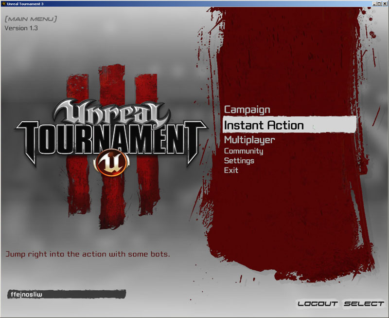
Figure 11.68 –启动了Instant Action(即时战斗)游戏。 5. 从下一个屏幕中选择UTPelletGame，并在那之后选择CH_10_PowerDome地图。

Figure 11.69 –选中了CH_10_PowerDome 地图。 6. 选择机器人的数量，以便在地图中出现您期望的机器人数量，对于这个地图来说，5到7通常是个较好的数字，然后选择启动游戏。
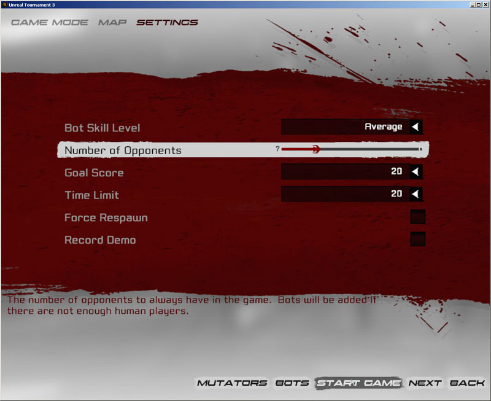
图片 11.70 –把机器人添加到地图中进行测试。 7. 这时，测试游戏和机器人行为将由您决定。通过在控制台中输入‘god’来打开God模式通常是个好主意，这样当您在观察新的机器人的行为时您将不会被杀死。您可以在任何时候按下F1键来显示每个机器人获得的分数。这通常是查看他们是否按照您的期望收集pellet的最好方法。

图片 11.71 –游戏中的记分板显示了游戏中的每个玩家收集到的pellets 的数量。 我们需要看到的主要事情是正在收集pellets并且具有较少pellets的机器人正在搜索并攻击具有最多pellet的机器人。您自己收集大于一半的pellets通常是测试这个现象的最好方法，因为一旦所有其它的pellets都被收集后，其它的机器人将会大规模地跟随在您的后面。

图片 11.72 –机器人现在正在收集pellets 。 这些指南不仅显示了如何使用状态来产生不同的行为，同时希望它们也是您可以深入地学习了如何使用内置在控制器类中的函数来实现一个新的AI和导航功能。 <<<<指南结束 >>>>
11.8 –总结
状态是幻引擎3中的一个非常强大的工具，它使得游戏中的对象在不同的情况下表现出不同的行为，并且它最小化了对那些令人费解的控制结构的使用。这是另一个UnrealScript编程语言针对创建游戏环境中使用的对象进行特别修改的情况。状态提供的结构和可读性使得作为游戏性程序员的您可以更加容易地创建具有复杂游戏行为的新项。附加文件
- TurretContent.upk: TurretContent.upk
- Chapte11_CompleteSource.rar: 全部源文件。
- Chapter11_Maps.rar: 第十一章的地图。